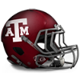
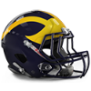
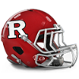
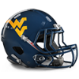
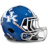
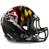

North Senior Bowl announced!The North has announced their Senior Bowl squad for 1985.
Bobby Hoying - QB, 158/454, 1876 yds, 9 TD
Jeff Brohm - QB, 126/216, 1571 yds, 13 TD
Jay Walker - QB, 152/378, 1998 yds, 18 TD
Karim Abdul-Jabbar - RB, 207 att, 856 yds, 3 TD, 8 rec, 100 yds, 0 TD
Oscar Gray - RB, 142 att, 927 yds, 12 TD, 7 rec, 64 yds, 0 TD
O.J. Simpson - RB, 316 att, 1102 yds, 3 TD, 7 rec, 39 yds, 0 TD
Chris Hetherington - FB, 7 att, 11 yds, 5 TD
Jorge Diaz - G, 32 Pancakes
Ken Blackman - G, 31 Pancakes
Jermane Mayberry - G, 36 Pancakes
Jon Clark - T, 43 Pancakes
Jonathan Ogden - T, 103 Pancakes
Shahriar Pourdanesh - T, 35 Pancakes
Aaron Graham - C, 33 Pancakes
Clay Shiver - C, 32 Pancakes
Scott Slutzker - TE, 25 rec, 197 yds, 2 TD
Hayward Clay - TE, 37 rec, 361 yds, 1 TD
Eric Moulds - WR, 33 rec, 643 yds, 6 TD
Terry Glenn - WR, 71 rec, 987 yds, 6 TD
Freddie Scott - WR, 41 rec, 512 yds, 3 TD
Alex Van Dyke - WR, 32 rec, 406 yds, 9 TD
Marvin Harrison - WR, 47 rec, 773 yds, 10 TD
Fred Thomas - CB, 48 Tck, 4 Int, 2 FR
Raymond Jackson - CB, 41 Tck, 3 Int, 1 Blk FG
Juran Bolden - CB, 51 Tck, 2 Int
Randall Godfrey - LB, 85 Tck, 2 Sck, 1 FR
Scott Galyon - LB, 84 Tck, 2 Sck, 1 Int
Gabe Northern - LB, 93 Tck, 2 Int
Jeff Gooch - LB, 70 Tck, 2 Sck, 2 Int, 4 FR
Larry Izzo - LB, 108 Tck, 1 FR
Ray Farmer - LB, 72 Tck, 1 Sck, 1 Int
Orpheus Roye - DT, 32 Tck, 5 Sck
Hollis Thomas - DT, 31 Tck, 3 Sck
Brad Keeney - DT, 25 Tck, 2 Sck
Daryl Gardener - DT, 44 Tck, 4 Sck
Steve White - DE, 32 Tck, 5 Sck
Duane Clemons - DE, 51 Tck, 8 Sck
Chris Sullivan - DE, 36 Tck, 5 Sck, 1 FR
Alex Molden - FS, 38 Tck, 2 Int, 1 Def TD, 2 FR
DeRon Jenkins - FS, 74 Tck, 2 Int
Ron Rice - SS, 48 Tck, 1 Sck
Ray Mickens - SS, 66 Tck, 3 Sck
Joe Nedney - K, 31/37 FG
P FILLER - P, 3740 yards, 38.2 avg, 41 inside 20South Senior Bowl announced!The South has announced their Senior Bowl squad for 1985.
Mike Ngo - QB, 153/277, 1611 yds, 15 TD
Johnny Unitas - QB, 214/337, 2764 yds, 28 TD
Shane Matthews - QB, 156/339, 1592 yds, 12 TD
Stephen Davis - RB, 399 att, 1677 yds, 19 TD
Eddie George - RB, 195 att, 800 yds, 8 TD
Arnold Mickens - RB, 218 att, 848 yds, 7 TD
Mike Alstott - FB, 53 att, 346 yds, 8 TD, 12 rec, 146 yds, 1 TD
Brandon Hayes - G, 41 Pancakes
Rich Tylski - G, 38 Pancakes
Jim Mills - G, 29 Pancakes
Ethan Brooks - T, 29 Pancakes
Jason Odom - T, 38 Pancakes
Grant Williams - T, 39 Pancakes
Quentin Neujahr - C, 33 Pancakes
Jeff Hartings - C, 36 Pancakes
Ernie Conwell - TE, 41 rec, 366 yds, 2 TD
Rickey Dudley - TE, 19 rec, 387 yds, 2 TD
Joe Horn - WR, 59 rec, 1004 yds, 12 TD
Eddie Kennison - WR, 76 rec, 1117 yds, 10 TD
Muhsin Muhammad - WR, 49 rec, 809 yds, 3 TD
Terrell Owens - WR, 48 rec, 1019 yds, 11 TD
Keyshawn Johnson - WR, 32 rec, 749 yds, 9 TD
Percy Ellsworth - CB, 57 Tck, 2 Int, 1 Def TD, 4 FR
Kwame Ellis - CB, 38 Tck, 1 Sck, 5 Int
Eric Smedley - CB, 35 Tck, 2 Int
Zach Thomas - LB, 94 Tck, 6 Sck, 1 Int
James Logan - LB, 21 Tck, 1 FR
Daved Benefield - LB, 38 Tck, 1 Int
Steve Conley - LB, 32 Tck
Kevin Hardy - LB, 76 Tck, 3 FR
Ray Lewis - LB, 86 Tck, 3 Sck
Tom Barndt - DT, 27 Tck, 1 Sck
La'Roi Glover - DT, 27 Tck, 7 Sck
Alan Page - DT, 22 Tck, 3 Sck
Bernard Holsey - DT, 32 Tck, 5 Sck, 1 Blk FG, 1 FR
Kavika Pittman - DE, 68 Tck, 6 Sck
George Halas - DE, 44 Tck, 7 Sck
Israel Raybon - DE, 33 Tck, 8 Sck, 1 FR
Marcus Coleman - FS, 44 Tck, 2 Sck, 1 Int, 1 FR
Reggie Tongue - FS, 56 Tck, 1 Sck, 4 Int
Brian Dawkins - SS, 91 Tck, 2 FR
Conrad Hamilton - SS, 80 Tck, 1 FR
K FILLER - K, 18/28 FG
Josh Miller - P, 5048 yards, 43.5 avg, 40 inside 20Prestige UpdatesGained Prestige:
+ 2 : Rutgers Scarlet Knights
+ 2 : USC Trojans
+ 3 : Stanford Cardinal
+ 5 : Cambridge Blues
Lost Prestige:
-1 : Army Black Knights
-1 : Clemson Tigers
-1 : LSU Tigers
-1 : Oklahoma Sooners
-2 : California Golden Bears
-2 : Heidelberg Student Princes
-2 : Kings College London Regents
-2 : Michigan State Spartans
-2 : Missouri Tigers
-2 : Ohio State Buckeyes
-2 : Syracuse Orange
-2 : Texas Longhorns
-2 : Washington Huskies
-2 : Wisconsin Badgers
-3 : Florida State Seminoles
-3 : Otterbein Cardinals
-4 : Auburn Tigers
-4 : Illinois Fighting Illini
1985 Ray Guy Award Award Cambridge Blues P, Shawn McCarthy has won the Ray Guy Award award for 1985. Cambridge Blues P, Shawn McCarthy has won the Ray Guy Award award for 1985.
1985 Lou Groza Award Award Michigan State Spartans K, Joe Nedney has won the Lou Groza Award award for 1985. Michigan State Spartans K, Joe Nedney has won the Lou Groza Award award for 1985.
1985 Jim Thorpe Award AwardCambridge Blues CB, Josh Blackwell has won the Jim Thorpe Award award for 1985.1985 Butkus Award Award Texas A&M Aggies LB, Kayvon Thibodeaux has won the Butkus Award award for 1985. 1985 Bednarik Award AwardCambridge Blues DE, Josh Paschal has won the Bednarik Award award for 1985.1985 Outland Trophy Award Michigan Wolverines T, Jonathan Ogden has won the Outland Trophy award for 1985. 1985 John Mackey Award AwardArmy Black Knights TE, Jelani Woods has won the John Mackey Award award for 1985.1985 Biletnikoff Award Award Kings College London Regents WR, Calvin Johnson has won the Biletnikoff Award award for 1985. Kings College London Regents WR, Calvin Johnson has won the Biletnikoff Award award for 1985.
1985 Johnny Unitas Golden Arm Award Award USC Trojans QB, Johnny Unitas has won the Johnny Unitas Golden Arm Award award for 1985. USC Trojans QB, Johnny Unitas has won the Johnny Unitas Golden Arm Award award for 1985.
1985 Davey O'Brien Award AwardOklahoma Sooners QB, Vince Young has won the Davey O'Brien Award award for 1985.1985 Doak Walker Award Award Stanford Cardinal RB, Stephen Davis has won the Doak Walker Award award for 1985. Stanford Cardinal RB, Stephen Davis has won the Doak Walker Award award for 1985.
1985 Bronko Nagurski Trophy AwardCambridge Blues DE, Josh Paschal has won the Bronko Nagurski Trophy award for 1985.1985 Walter Camp Award AwardStanford Cardinal RB, Stephen Davis has won the Walter Camp Award award for 1985.1985 Heisman Trophy AwardStanford Cardinal RB, Stephen Davis has won the Heisman Trophy award for 1985.Conference Players of the Year:----International Conference----
Defense:
Cromartie, A. - CB, PSU (43 Tck, 5 Int, 2 Def TD, 1 FR)
Offense:
Reggie Bush - RB, RUT (203 att, 1086 yds, 6 TD)
----Big Ten Conference----
Defense:
Harper, R. - SS, MINN (58 Tck, 1 Int, 1 FR)
Offense:
Greg Camarillo - WR, NEB (46 rec, 546 yds, 6 TD)
----Pacific 10 Conference----
Defense:
Ellsworth, P. - CB, STAN (57 Tck, 2 Int, 1 Def TD, 4 FR)
Offense:
Eddie George - RB, UCLA (195 att, 800 yds, 8 TD)
----Southeastern Conference----
Defense:
Finnegan, C. - CB, UK (51 Tck, 7 Int, 2 Def TD, 1 Blk FG, 1 FR)
Offense:
O.J. Simpson - RB, WVU (316 att, 1102 yds, 3 TD, 7 rec, 39 yds, 0 TD)
All-American Team Announced1985 All-American Team
QB Vince Young - Oklahoma Sooners (209/389, 2220 yds, 11 TD)
RB Stephen Davis - Stanford Cardinal (399 att, 1677 yds, 19 TD)
FB Mike Alstott - Alabama Crimson Tide (53 att, 346 yds, 8 TD, 12 rec, 146 yds, 1 TD)
TE Jelani Woods - Army Black Knights (50 rec, 694 yds, 6 TD)
WR Calvin Johnson - Kings College London Regents (64 rec, 1324 yds, 13 TD)
C Ryan Cook - Notre Dame Fighting Irish (45 Pancakes)
G Dylan Parham - Michigan Wolverines (65 Pancakes)
T Jonathan Ogden - Michigan Wolverines (103 Pancakes)
DT Jordan Davis - Maryland Terrapins (53 Tck, 12 Sck, 2 FR)
DE Josh Paschal - Cambridge Blues (28 Tck, 9 Sck)
LB Kayvon Thibodeaux - Texas A&M Aggies (104 Tck, 5 Sck, 3 Int, 1 Def TD, 2 FR)
CB Josh Blackwell - Cambridge Blues (57 Tck, 8 Int, 1 Def TD, 1 FR)
SS Dane Belton - Rutgers Scarlet Knights (45 Tck, 3 Int, 1 Def TD, 3 FR)
FS Rodney Thomas II - Navy Midshipmen (94 Tck, 3 Sck, 1 Int, 3 FR)
K Joe Nedney - Michigan State Spartans (31/37 FG)
P Jon Ryan - Texas A&M Aggies (4747 yards, 45.6 avg, 49 inside 20)Southeastern Conference All-Conference Team Announced1985 Southeastern Conference All-Conference Team.
QB Danny White II - QB - Georgia Bulldogs (107/271, 2773 yds, 33 TD)
RB Tyler Allgeier - RB - Georgia Bulldogs (253 att, 1382 yds, 22 TD, 5 rec, 135 yds, 0 TD)
FB Mike Alstott - FB - Alabama Crimson Tide (53 att, 346 yds, 8 TD, 12 rec, 146 yds, 1 TD)
TE Jake Ferguson - TE - Clemson Tigers (49 rec, 528 yds, 5 TD)
WR Marques Colston - WR - Georgia Bulldogs (52 rec, 1272 yds, 16 TD)
C Ryan Kalil - C - Georgia Bulldogs (46 Pancakes)
G Kenyon Green - G - Georgia Bulldogs (43 Pancakes)
T D'Brickashaw Ferguson - T - Alabama Crimson Tide (71 Pancakes)
DT Ted Washington - DT - Auburn Tigers (46 Tck, 6 Sck)
DE Alex Wright - DE - Florida Gators (32 Tck, 6 Sck)
LB Keith Ellison - LB - Clemson Tigers (88 Tck, 3 Sck, 1 Int, 3 FR)
CB Cortland Finnegan - CB - Kentucky Wildcats (51 Tck, 7 Int, 2 Def TD, 1 Blk FG, 1 FR)
SS Vinnie Clark - SS - Alabama Crimson Tide (57 Tck, 3 Sck, 1 Int, 1 FR)
FS Reggie Tongue - FS - Florida State Seminoles (56 Tck, 1 Sck, 4 Int)
K Mason Crosby - K - Clemson Tigers (33/42 FG)
P Jake Camarda - P - Clemson Tigers (4389 yards, 41.4 avg, 42 inside 20)Pacific 10 Conference All-Conference Team Announced1985 Pacific 10 Conference All-Conference Team.
QB Vince Young - QB - Oklahoma Sooners (209/389, 2220 yds, 11 TD)
RB Stephen Davis - RB - Stanford Cardinal (399 att, 1677 yds, 19 TD)
FB John Kuhn - FB - USC Trojans (43 att, 174 yds, 3 TD)
TE Marcedes Lewis - TE - USC Trojans (40 rec, 465 yds, 4 TD)
WR Joe Horn - WR - USC Trojans (59 rec, 1004 yds, 12 TD)
C Samson Satele - C - Oklahoma Sooners (43 Pancakes)
G Marshal Yanda - G - Oklahoma Sooners (39 Pancakes)
T Joe Thomas - T - Oklahoma Sooners (101 Pancakes)
DT Eric Swann - DT - Oklahoma Sooners (38 Tck, 8 Sck)
DE Israel Raybon - DE - Texas A&M Aggies (33 Tck, 8 Sck, 1 FR)
LB Kayvon Thibodeaux - LB - Texas A&M Aggies (104 Tck, 5 Sck, 3 Int, 1 Def TD, 2 FR)
CB Ja'Sir Taylor - CB - Texas A&M Aggies (44 Tck, 8 Int, 1 Def TD)
SS Danieal Manning - SS - Texas Longhorns (90 Tck, 1 Sck, 1 FR)
FS Markquese Bell - FS - Texas A&M Aggies (79 Tck, 1 Sck, 1 Int, 3 FR)
K John Kasay - K - Texas A&M Aggies (24/35 FG)
P Jon Ryan - P - Texas A&M Aggies (4747 yards, 45.6 avg, 49 inside 20)Big Ten Conference All-Conference Team Announced1985 Big Ten Conference All-Conference Team.
QB Ron Jaworski II - QB - Michigan Wolverines (134/347, 2415 yds, 12 TD)
RB Kyren Williams - RB - Minnesota Golden Gophers (226 att, 1238 yds, 11 TD, 19 rec, 110 yds, 2 TD)
FB Tuffy Leemans - FB - Michigan State Spartans (74 att, 301 yds, 3 TD, 9 rec, 56 yds, 0 TD)
TE Trey McBride - TE - Northwestern Wildcats (39 rec, 409 yds, 3 TD)
WR Mike Williams - WR - Northwestern Wildcats (67 rec, 916 yds, 7 TD)
C Ryan Cook - C - Notre Dame Fighting Irish (45 Pancakes)
G Dylan Parham - G - Michigan Wolverines (65 Pancakes)
T Jonathan Ogden - T - Michigan Wolverines (103 Pancakes)
DT Edward Johnson - DT - Nebraska Cornhuskers (45 Tck, 4 Sck, 1 FR)
DE Jeff Charleston - DE - Nebraska Cornhuskers (25 Tck, 7 Sck)
LB Dixon Edwards - LB - Northwestern Wildcats (85 Tck, 4 Sck, 2 Int, 1 Def TD)
CB Derek Stingley Jr - CB - Michigan State Spartans (55 Tck, 5 Int)
SS Antoine Bethea - SS - Northwestern Wildcats (88 Tck, 3 Sck, 1 Int, 1 Def TD)
FS Lewis Cine - FS - Notre Dame Fighting Irish (53 Tck, 4 Sck, 2 Int, 1 Def TD, 3 FR)
K Joe Nedney - K - Michigan State Spartans (31/37 FG)
P P FILLER - P - Northwestern Wildcats (3740 yards, 38.2 avg, 41 inside 20)International Conference All-Conference Team Announced1985 International Conference All-Conference Team.
QB D.J. Shockley - QB - Maryland Terrapins (214/418, 2824 yds, 28 TD)
RB Forrest Gump - RB - Rutgers Scarlet Knights (202 att, 1395 yds, 18 TD)
FB Chuck Webb - FB - Cambridge Blues (61 att, 191 yds, 2 TD, 8 rec, 58 yds, 0 TD)
TE Jelani Woods - TE - Army Black Knights (50 rec, 694 yds, 6 TD)
WR Calvin Johnson - WR - Kings College London Regents (64 rec, 1324 yds, 13 TD)
C Nick Mangold - C - Maryland Terrapins (41 Pancakes)
G Brandon Burlsworth - G - Navy Midshipmen (46 Pancakes)
T Jeremy Trueblood - T - Rutgers Scarlet Knights (72 Pancakes)
DT Jordan Davis - DT - Maryland Terrapins (53 Tck, 12 Sck, 2 FR)
DE Josh Paschal - DE - Cambridge Blues (28 Tck, 9 Sck)
LB Cameron Thomas - LB - Penn State Nittany Lions (80 Tck, 3 Sck, 2 Int, 4 FR)
CB Josh Blackwell - CB - Cambridge Blues (57 Tck, 8 Int, 1 Def TD, 1 FR)
SS Dane Belton - SS - Rutgers Scarlet Knights (45 Tck, 3 Int, 1 Def TD, 3 FR)
FS Rodney Thomas II - FS - Navy Midshipmen (94 Tck, 3 Sck, 1 Int, 3 FR)
K Stephen Gostkowski - K - Army Black Knights (23/29 FG)
P Shawn McCarthy - P - Cambridge Blues (4357 yards, 43.1 avg, 43 inside 20)Bowl Games Recruiting Update2 players committed this week.
5 star players committed this week: 1.
4 star players committed this week: 0.
3 star players committed this week: 1.
2 star players committed this week: 0.
1 star players committed this week: 0.
1 players ranked in the top 100 recruits committed this week.
The most highly touted prospect committing this week was Kevin Fagan (a 5 star DE from MANATEE HS ranked at #30) who committed to Miami (FL).
Southeastern Conference was the conference that netted the most recruits this week with a total of 2.
LSU Tigers locked down the most prospects this week was as they got 1 recruits to sign.
The highest ranked uncommitted recruit is Rod Woodson - CB. He is ranked at #2
Total Recruits committed this season is 645.Bowl Games Recruiting Update1 players committed this week.
5 star players committed this week: 0.
4 star players committed this week: 1.
3 star players committed this week: 0.
2 star players committed this week: 0.
1 star players committed this week: 0.
0 players ranked in the top 100 recruits committed this week.
The most highly touted prospect committing this week was Russ Swan (a 4 star LB from SILVER CREEK HS ranked at #286) who committed to Texas A&M.
Pacific 10 Conference was the conference that netted the most recruits this week with a total of 1.
Texas A&M Aggies locked down the most prospects this week was as they got 1 recruits to sign.
The highest ranked uncommitted recruit is Rod Woodson - CB. He is ranked at #2
Total Recruits committed this season is 643.Bowl Games Recruiting Update3 players committed this week.
5 star players committed this week: 0.
4 star players committed this week: 1.
3 star players committed this week: 2.
2 star players committed this week: 0.
1 star players committed this week: 0.
0 players ranked in the top 100 recruits committed this week.
The most highly touted prospect committing this week was Karl Wilson (a 4 star DE from CONNETQUOT HS ranked at #144) who committed to Syracuse.
International Conference was the conference that netted the most recruits this week with a total of 1.
Syracuse Orange locked down the most prospects this week was as they got 1 recruits to sign.
The highest ranked uncommitted recruit is Rod Woodson - CB. He is ranked at #2
Total Recruits committed this season is 642.Bowl Games Recruiting Update1 players committed this week.
5 star players committed this week: 1.
4 star players committed this week: 0.
3 star players committed this week: 0.
2 star players committed this week: 0.
1 star players committed this week: 0.
1 players ranked in the top 100 recruits committed this week.
The most highly touted prospect committing this week was Jerome Brown (a 5 star DT from STEBBINS HS ranked at #9) who committed to Illinois.
Big Ten Conference was the conference that netted the most recruits this week with a total of 1.
Illinois Fighting Illini locked down the most prospects this week was as they got 1 recruits to sign.
The highest ranked uncommitted recruit is Rod Woodson - CB. He is ranked at #2
Total Recruits committed this season is 639.Jerome Brown - DT commits to Illinois.Jerome Brown has committed to the Fighting Illini.
Brown is widely considered to be one of the top ten prospects in this years recruiting class, and a lot of eyes have been on the DT from STEBBINS HS.
Brown was also pursued by Ohio State Buckeyes, Maryland Terrapins, Cambridge Blues, Michigan Wolverines, Iowa Hawkeyes, Notre Dame Fighting Irish, Kentucky Wildcats, Otterbein Cardinals, and LSU Tigers.Bowl Games Recruiting Update2 players committed this week.
5 star players committed this week: 1.
4 star players committed this week: 0.
3 star players committed this week: 1.
2 star players committed this week: 0.
1 star players committed this week: 0.
1 players ranked in the top 100 recruits committed this week.
The most highly touted prospect committing this week was Elbert Shelley (a 5 star FS from DIBERVILLE HS ranked at #25) who committed to Syracuse.
International Conference was the conference that netted the most recruits this week with a total of 2.
Heidelberg Student Princes locked down the most prospects this week was as they got 1 recruits to sign.
The highest ranked uncommitted recruit is Rod Woodson - CB. He is ranked at #2
Total Recruits committed this season is 638.Bowl Games Recruiting Update7 players committed this week.
5 star players committed this week: 0.
4 star players committed this week: 2.
3 star players committed this week: 5.
2 star players committed this week: 0.
1 star players committed this week: 0.
1 players ranked in the top 100 recruits committed this week.
The most highly touted prospect committing this week was Terry Wright (a 4 star FS from WAYNESBORO HS ranked at #57) who committed to Auburn.
International Conference was the conference that netted the most recruits this week with a total of 3.
Otterbein Cardinals locked down the most prospects this week was as they got 2 recruits to sign.
The highest ranked uncommitted recruit is Rod Woodson - CB. He is ranked at #2
Total Recruits committed this season is 636.Week 14 Recruiting Update26 players committed this week.
5 star players committed this week: 0.
4 star players committed this week: 3.
3 star players committed this week: 23.
2 star players committed this week: 0.
1 star players committed this week: 0.
0 players ranked in the top 100 recruits committed this week.
The most highly touted prospect committing this week was Reggie Rogers (a 4 star DE from DUBLIN HS ranked at #106) who committed to Miami (FL).
Big Ten Conference was the conference that netted the most recruits this week with a total of 9.
Missouri Tigers locked down the most prospects this week was as they got 4 recruits to sign.
The highest ranked uncommitted recruit is Rod Woodson - CB. He is ranked at #2
Total Recruits committed this season is 629.Prestige UpdatesPrestige Changes for week 14
Losses:
Illinois Fighting Illini were blown out by the Minnesota Golden Gophers : Prestige loss - 0.05International Conference News: Rutgers Scarlet Knights: A no Pass Zone. Scarlet Knights pass defense this year has been lights-out this season, giving up only 1741 in 12 games. Said one member of the defensive backfield, ‘We’re so good, our opponent’s wives come to watch US play’. Texas Longhorns resigns Dwight Freeney as LB Coach The Longhorns have announced that they have given Dwight Freeney a new contract. Freeney will continue to serve as LBCoach for 4 years earning 0.5 million per year. The Longhorns have announced that they have given Dwight Freeney a new contract. Freeney will continue to serve as LBCoach for 4 years earning 0.5 million per year.
California Golden Bears resigns George Webster as DB Coach The Golden Bears have announced that they have given George Webster a new contract. Webster will continue to serve as DBCoach for 4 years earning 0.5 million per year. The Golden Bears have announced that they have given George Webster a new contract. Webster will continue to serve as DBCoach for 4 years earning 0.5 million per year.
Week 14: RB Maurice Jones-Drew (HEI) wins Offensive Player of the WeekIn a standout performance, Maurice Jones-Drew rushed for 213 yards and scored 1 touchdowns, guiding Heidelberg Student Princes to a win against Otterbein Cardinals.
Heidelberg Student Princes prestige bonus + 0.05Week 14: CB Antonio Cromartie (PSU) wins Defensive Player of the Week In Week 14 of the 1985, Penn State Nittany Lions's Antonio Cromartie made waves with an outstanding defensive display. The defensive back recorded 2 interceptions and 4 tackles, helping propel the Nittany Lions to victory against Maryland Terrapins. This season, Cromartie has become a key player with 5 total picks, highlighting his impact since signing in 1983. In Week 14 of the 1985, Penn State Nittany Lions's Antonio Cromartie made waves with an outstanding defensive display. The defensive back recorded 2 interceptions and 4 tackles, helping propel the Nittany Lions to victory against Maryland Terrapins. This season, Cromartie has become a key player with 5 total picks, highlighting his impact since signing in 1983.
Penn State Nittany Lions prestige bonus + 0.05
Week 14 : Conference Players of the WeekInternational Conference Defensive player of the week: Antonio Cromartie - CB, PSU.
International Conference Offensive player of the week: Maurice Jones-Drew - RB, HEI.
Big Ten Conference Defensive player of the week: Jeff Charleston - DE, NEB.
Big Ten Conference Offensive player of the week: Brian Lattimore - RB, NW.
Pacific 10 Conference Defensive player of the week: Marcus Jones CB - CB, USC.
Pacific 10 Conference Offensive player of the week: Joe Horn - WR, USC.
Southeastern Conference Defensive player of the week: Mike Mickens - CB, AUB.
Southeastern Conference Offensive player of the week: James Brooks II - RB, FLA.
Game Recaps for Week 14Navy Midshipmen - 27, Army Black Knights - 13
Rutgers Scarlet Knights - 55, Syracuse Orange - 0
Heidelberg Student Princes - 27, Otterbein Cardinals - 13
Penn State Nittany Lions - 39, Maryland Terrapins - 38
Cambridge Blues - 33, Kings College London Regents - 16
Michigan State Spartans - 34, Notre Dame Fighting Irish - 17
Nebraska Cornhuskers - 16, Iowa Hawkeyes - 13
Michigan Wolverines - 7, Ohio State Buckeyes - 6
Minnesota Golden Gophers - 13, Wisconsin Badgers - 3
Northwestern Wildcats - 55, Illinois Fighting Illini - 14
Stanford Cardinal - 35, California Golden Bears - 0
Oklahoma Sooners - 30, Missouri Tigers - 0
Texas A&M Aggies - 23, Texas Longhorns - 10
Oregon Ducks - 42, Washington Huskies - 6
USC Trojans - 58, UCLA Bruins - 10
Georgia Bulldogs - 45, Clemson Tigers - 3
West Virginia Mountaineers - 24, Kentucky Wildcats - 20
Auburn Tigers - 20, Alabama Crimson Tide - 17
Miami (FL) Hurricanes - 20, LSU Tigers - 14
Florida Gators - 41, Florida State Seminoles - 6Week 14: LB Ray Farmer (WVU) has suffered a major injury! West Virginia Mountaineers's linebacker Ray Farmer suffered an injury during practice, diagnosed as a Ruptured Achilles. The team is hopeful for a quick recovery to keep their defense intact. Week 14 Recruiting Update61 players committed this week.
5 star players committed this week: 5.
4 star players committed this week: 17.
3 star players committed this week: 39.
2 star players committed this week: 0.
1 star players committed this week: 0.
12 players ranked in the top 100 recruits committed this week.
The most highly touted prospect committing this week was Cornelius Bennett (a 5 star LB from KLEIN HS ranked at #1) who committed to Cambridge.
Big Ten Conference was the conference that netted the most recruits this week with a total of 19.
Illinois Fighting Illini locked down the most prospects this week was as they got 5 recruits to sign.
The highest ranked uncommitted recruit is Rod Woodson - CB. He is ranked at #2
Total Recruits committed this season is 603.Shane Conlan - LB commits to Michigan State.Shane Conlan has committed to the Spartans.
Conlan is widely considered to be one of the top ten prospects in this years recruiting class, and a lot of eyes have been on the LB from LINDALE HS.
Conlan was also pursued by Minnesota Golden Gophers, Texas A&M Aggies, and Navy Midshipmen.Cornelius Bennett - LB commits to Cambridge.Cornelius Bennett has committed to the Blues.
Bennett is widely considered to be one of the top ten prospects in this years recruiting class, and a lot of eyes have been on the LB from KLEIN HS.
Bennett was also pursued by Michigan State Spartans, Maryland Terrapins, and West Virginia Mountaineers.Prestige UpdatesPrestige Changes for week 14
Losses:
Illinois Fighting Illini were blown out by the Minnesota Golden Gophers : Prestige loss - 0.05Big Ten Conference News: Big boys shows the way for the Wolverines.The big men from Wolverines are totally crushing opponents this year. They’ve given up only 40 sacks in 11 games while collecting 348 pancakes.Ohio State Buckeyes resigns Donald Oaks as Head Scout The Buckeyes have announced that they have given Donald Oaks a new contract. Oaks will continue to serve as HeadScout for 3 years earning 1 million per year. The Buckeyes have announced that they have given Donald Oaks a new contract. Oaks will continue to serve as HeadScout for 3 years earning 1 million per year.
Syracuse Orange resigns Dave Maurer as Head Recruiter The Orange have announced that they have given Dave Maurer a new contract. Maurer will continue to serve as HeadRecruiter for 6 years earning 0.5 million per year. The Orange have announced that they have given Dave Maurer a new contract. Maurer will continue to serve as HeadRecruiter for 6 years earning 0.5 million per year.
Heidelberg Student Princes resigns Jim Crowley as Special Teams CoachThe Student Princes have announced that they have given Jim Crowley a new contract. Crowley will continue to serve as SpecialTeamsCoach for 4 years earning 0.5 million per year.Penn State Nittany Lions resigns Ralph Flaherty as Head ScoutThe Nittany Lions have announced that they have given Ralph Flaherty a new contract. Flaherty will continue to serve as HeadScout for 7 years earning 0.5 million per year.Week 13: RB Oscar Gray (MINN) wins Offensive Player of the Week In a standout performance, Oscar Gray rushed for 149 yards and scored 2 touchdowns, guiding Minnesota Golden Gophers to a win against Illinois Fighting Illini. In a standout performance, Oscar Gray rushed for 149 yards and scored 2 touchdowns, guiding Minnesota Golden Gophers to a win against Illinois Fighting Illini.
Minnesota Golden Gophers prestige bonus + 0.05
Week 13: CB Cortland Finnegan (UK) wins Defensive Player of the Week This week, Cortland Finnegan from the Kentucky Wildcats shined on defense, playing a crucial role in the Wildcats 26 to 10 triumph against the Miami (FL) Hurricanes. His 2 interceptions and 6 tackles were instrumental in keeping the opposition at bay. Kentucky Wildcats prestige bonus + 0.05 Week 13 : Conference Players of the WeekInternational Conference Defensive player of the week: Jonathan Lewis - DT, KCL.
International Conference Offensive player of the week: Chris Olave - WR, CAMB.
Big Ten Conference Defensive player of the week: Johnathan Joseph - CB, NW.
Big Ten Conference Offensive player of the week: Oscar Gray - RB, MINN.
Pacific 10 Conference Defensive player of the week: DaRon Bland - CB, OK.
Pacific 10 Conference Offensive player of the week: Eddie Kennison - WR, MIZZOU.
Southeastern Conference Defensive player of the week: Cortland Finnegan - CB, UK.
Southeastern Conference Offensive player of the week: Christian Watson - WR, WVU.
Game Recaps for Week 13Northwestern Wildcats - 26, Nebraska Cornhuskers - 25
Cambridge Blues - 23, Maryland Terrapins - 17
Kentucky Wildcats - 26, Miami (FL) Hurricanes - 10
Florida Gators - 40, LSU Tigers - 17
Oklahoma Sooners - 28, Washington Huskies - 20
Iowa Hawkeyes - 13, Wisconsin Badgers - 0
West Virginia Mountaineers - 27, Florida State Seminoles - 3
Missouri Tigers - 44, UCLA Bruins - 10
Rutgers Scarlet Knights - 14, Heidelberg Student Princes - 6
Minnesota Golden Gophers - 56, Illinois Fighting Illini - 17
Kings College London Regents - 25, Syracuse Orange - 24
USC Trojans - 37, Oregon Ducks - 7Week 13 Recruiting Update66 players committed this week.
5 star players committed this week: 4.
4 star players committed this week: 17.
3 star players committed this week: 45.
2 star players committed this week: 0.
1 star players committed this week: 0.
12 players ranked in the top 100 recruits committed this week.
The most highly touted prospect committing this week was Hardy Nickerson (a 5 star LB from LOARA HS ranked at #5) who committed to Maryland.
Southeastern Conference was the conference that netted the most recruits this week with a total of 21.
Miami (FL) Hurricanes locked down the most prospects this week was as they got 6 recruits to sign.
The highest ranked uncommitted recruit is Cornelius Bennett - LB. He is ranked at #1
Total Recruits committed this season is 542.Vinny Testaverde - QB commits to California.Vinny Testaverde has committed to the Golden Bears.
Testaverde is widely considered to be one of the top ten prospects in this years recruiting class, and a lot of eyes have been on the QB from UNITED SOUTH HS.
Testaverde was also pursued by West Virginia Mountaineers, Michigan State Spartans, Northwestern Wildcats, Cambridge Blues, Clemson Tigers, Miami (FL) Hurricanes, Georgia Bulldogs, Illinois Fighting Illini, Iowa Hawkeyes, and Syracuse Orange.Hardy Nickerson - LB commits to Maryland. Hardy Nickerson has committed to the Terrapins. Nickerson is widely considered to be one of the top ten prospects in this years recruiting class, and a lot of eyes have been on the LB from LOARA HS. Nickerson was also pursued by Minnesota Golden Gophers, Wisconsin Badgers, and West Virginia Mountaineers. Jason Rader - TE (AUB) thanks coaches for his recent performance.Jason Rader - TE (AUB) revealed on social media recent praise from Jim Tressel (HC). The respect between Rader and HC Tressel is high. Praise by the coach and how well this was recieved by Rader is testament to that.Prestige UpdatesPrestige Changes for week 13
Gains:
Northwestern Wildcats lit up the scoreboard against the Michigan State Spartans : Prestige bonus + 0.05
USC Trojans blew out the Oklahoma Sooners : Prestige bonus + 0.05
Losses:
Otterbein Cardinals was walked all over by the Penn State Nittany Lions : Prestige loss - 0.05
Michigan State Spartans were no match for the Northwestern Wildcats : Prestige loss - 0.10
Oklahoma Sooners got humiliated by the USC Trojans : Prestige loss - 0.10Southeastern Conference News: Big boys shows the way for the Bulldogs. The big boys from Bulldogs are rag dolling defenses this year. They’ve given up only 26 sacks in 11 games while collecting 305 pancakes. The big boys from Bulldogs are rag dolling defenses this year. They’ve given up only 26 sacks in 11 games while collecting 305 pancakes.
West Virginia Mountaineers resigns Larry Kramer as OL CoachThe Mountaineers have announced that they have given Larry Kramer a new contract. Kramer will continue to serve as OLCoach for 8 years earning 0.5 million per year.Texas Longhorns resigns Jake Mcnamara as Head RecruiterThe Longhorns have announced that they have given Jake Mcnamara a new contract. Mcnamara will continue to serve as HeadRecruiter for 3 years earning 0.5 million per year.Iowa Hawkeyes resigns Joe Fusco as RB and Receivers Coach The Hawkeyes have announced that they have given Joe Fusco a new contract. Fusco will continue to serve as SkillPositionCoach for 3 years earning 1 million per year. The Hawkeyes have announced that they have given Joe Fusco a new contract. Fusco will continue to serve as SkillPositionCoach for 3 years earning 1 million per year.
Navy Midshipmen resigns LaVell Edwards as Head CoachThe Midshipmen have announced that they have given LaVell Edwards a new contract. Edwards will continue to serve as HeadCoach for 5 years earning 3.5 million per year.Week 12: RB Forrest Gump (RUT) wins Offensive Player of the WeekWeek 12's Offensive Player of the Week is Running Back Forrest Gump. His 15 att, 135 yds, 3 TD performance stood out in the 52 to 27 victory for the Cambridge Blues.
The gridiron star is racking up the rushing yards and now has 1036 Yards and 15 Touchdowns for the season.
Rutgers Scarlet Knights prestige bonus + 0.05Week 12: CB Tye Hill (MIA) wins Defensive Player of the Week CB Tye Hill of the Miami (FL) Hurricanes has earned the Defensive Player of the Week award. Hill finished with 5 Tck, 3 Int. CB Tye Hill of the Miami (FL) Hurricanes has earned the Defensive Player of the Week award. Hill finished with 5 Tck, 3 Int.
Miami (FL) Hurricanes prestige bonus + 0.05
Week 12 : Conference Players of the WeekInternational Conference Defensive player of the week: Craig Patterson - DE, NAVY.
International Conference Offensive player of the week: Forrest Gump - RB, RUT.
Big Ten Conference Defensive player of the week: Jeff Charleston - DE, NEB.
Big Ten Conference Offensive player of the week: Stepfret Williams - WR, IOWA.
Pacific 10 Conference Defensive player of the week: Gerard Ross - CB, MIZZOU.
Pacific 10 Conference Offensive player of the week: Pat Chaffey - RB, USC.
Southeastern Conference Defensive player of the week: Tye Hill - CB, MIA.
Southeastern Conference Offensive player of the week: Marques Colston - WR, UGA.
Game Recaps for Week 12Penn State Nittany Lions - 52, Otterbein Cardinals - 0
Kings College London Regents - 21, Army Black Knights - 10
Northwestern Wildcats - 52, Michigan State Spartans - 13
Nebraska Cornhuskers - 13, Notre Dame Fighting Irish - 6
Cambridge Blues - 52, Rutgers Scarlet Knights - 27
Miami (FL) Hurricanes - 36, Auburn Tigers - 29
Kentucky Wildcats - 19, Florida Gators - 14
Texas Longhorns - 30, Washington Huskies - 7
Wisconsin Badgers - 23, Michigan Wolverines - 6
Georgia Bulldogs - 44, Florida State Seminoles - 0
California Golden Bears - 17, UCLA Bruins - 16
Clemson Tigers - 19, West Virginia Mountaineers - 0
Missouri Tigers - 34, Stanford Cardinal - 27
Maryland Terrapins - 21, Heidelberg Student Princes - 14
Iowa Hawkeyes - 19, Illinois Fighting Illini - 13
Navy Midshipmen - 27, Syracuse Orange - 20
USC Trojans - 45, Oklahoma Sooners - 7Week 12 Recruiting Update99 players committed this week.
5 star players committed this week: 12.
4 star players committed this week: 53.
3 star players committed this week: 34.
2 star players committed this week: 0.
1 star players committed this week: 0.
30 players ranked in the top 100 recruits committed this week.
The most highly touted prospect committing this week was Cris Carter (a 5 star WR from MIAMI CENTRAL HS ranked at #3) who committed to Florida.
Big Ten Conference was the conference that netted the most recruits this week with a total of 31.
Iowa Hawkeyes locked down the most prospects this week was as they got 6 recruits to sign.
The highest ranked uncommitted recruit is Cornelius Bennett - LB. He is ranked at #1
Total Recruits committed this season is 476.Cris Carter - WR commits to Florida. Cris Carter has committed to the Gators. Cris Carter has committed to the Gators.
Carter is widely considered to be one of the top ten prospects in this years recruiting class, and a lot of eyes have been on the WR from MIAMI CENTRAL HS.
Carter was also pursued by Nebraska Cornhuskers, Minnesota Golden Gophers, Kings College London Regents, Wisconsin Badgers, and Georgia Bulldogs.
Bruce Armstrong - T commits to Maryland.Bruce Armstrong has committed to the Terrapins.
Armstrong is widely considered to be one of the top ten prospects in this years recruiting class, and a lot of eyes have been on the T from FOREST HILLS HS.
Armstrong was also pursued by Penn State Nittany Lions, Nebraska Cornhuskers, Michigan State Spartans, Rutgers Scarlet Knights, Minnesota Golden Gophers, Kings College London Regents, West Virginia Mountaineers, Wisconsin Badgers, Florida Gators, Michigan Wolverines, Clemson Tigers, and Army Black Knights.Jim Harbaugh - QB commits to Kings College London.Jim Harbaugh has committed to the Regents.
Harbaugh is widely considered to be one of the top ten prospects in this years recruiting class, and a lot of eyes have been on the QB from HAZEL GREEN HS.
Harbaugh was also pursued by Stanford Cardinal, West Virginia Mountaineers, and Miami (FL) Hurricanes.Hutchinson, Aidan (STAN) basks in praise from Lou Holtz (HC).Aidan Hutchinson - DE (STAN) was all smiles when discussing the praise by Lou Holtz (HC) in a recent interview. Lou Holtz (HC) getting along well with Hutchinson. The player stated he was recently humbled and honored by praise from the coach.Lemar Parrish - CB (ORE) upset with criticism from coaching staff.A recent interaction between Lemar Parrish - CB (ORE) and Knute Rockne (HC) has leaked to the media. The split between Parrish and HC Rockne has reached the public view and it is not pretty. Yet, things escalated further after recent criticism of Parrish from the coach.Prestige UpdatesPrestige Changes for week 12
Gains:
Oklahoma Sooners vastly outscored the California Golden Bears : Prestige bonus + 0.05
Heidelberg Student Princes vastly outscored the Syracuse Orange : Prestige bonus + 0.05
Losses:
California Golden Bears was walked all over by the Oklahoma Sooners : Prestige loss - 0.10
Army Black Knights were no match for the Rutgers Scarlet Knights : Prestige loss - 0.05
Kentucky Wildcats was walked all over by the Georgia Bulldogs : Prestige loss - 0.05
Syracuse Orange got trampled by the Heidelberg Student Princes : Prestige loss - 0.10International Conference News: Top receiver trio?The Regents trio of Calvin Johnson - WR, Steve Breaston - WR and Ben Patrick - TE are currently the leading trio of receivers in the league, with 20 receiving touchdowns between the three.Iowa Hawkeyes surprise everyone!The Iowa Hawkeyes fans are celebrating after the Hawkeyes took down the Michigan State Spartans.
In a superb effort the Hawkeyes kept at it, and brought home the win. The Spartans are widely considered to be the better of the two programs, but with the Hawkeyes winning the fans are hoping that the Hawkeyes will soon be able to dance with the big boys.LSU Tigers resigns Nick Eddy as Head Recruiter The Tigers have announced that they have given Nick Eddy a new contract. Eddy will continue to serve as HeadRecruiter for 5 years earning 0.5 million per year. The Tigers have announced that they have given Nick Eddy a new contract. Eddy will continue to serve as HeadRecruiter for 5 years earning 0.5 million per year.
Clemson Tigers resigns George Cumby as LB Coach The Tigers have announced that they have given George Cumby a new contract. Cumby will continue to serve as LBCoach for 6 years earning 0.5 million per year. The Tigers have announced that they have given George Cumby a new contract. Cumby will continue to serve as LBCoach for 6 years earning 0.5 million per year.
California Golden Bears resigns Roger Staubach as QB CoachThe Golden Bears have announced that they have given Roger Staubach a new contract. Staubach will continue to serve as QBCoach for 5 years earning 0.5 million per year.California Golden Bears resigns Fritz Crisler as Offensive CoordinatorThe Golden Bears have announced that they have given Fritz Crisler a new contract. Crisler will continue to serve as OffensiveCoordinator for 6 years earning 3.5 million per year.Week 11: RB Reggie Bush (RUT) wins Offensive Player of the WeekIn a standout performance, Reggie Bush rushed for 285 yards and scored 3 touchdowns, guiding Rutgers Scarlet Knights to a win against Army Black Knights.
Rutgers Scarlet Knights prestige bonus + 0.05Week 11: CB Lemar Parrish (ORE) wins Defensive Player of the Week CB Parrish's ball hawking ability was on display in the Ducks 33-21 game with the UCLA Bruins. He finished with 6 Tck, 1 Int, 1 Def TD. CB Parrish's ball hawking ability was on display in the Ducks 33-21 game with the UCLA Bruins. He finished with 6 Tck, 1 Int, 1 Def TD.
"Lemar has the unique ability to make plays and generate turnovers." -Ducks Defensive Coordinator
Oregon Ducks prestige bonus + 0.05
Week 11 : Conference Players of the WeekInternational Conference Defensive player of the week: Mario Williams - DE, RUT.
International Conference Offensive player of the week: Reggie Bush - RB, RUT.
Big Ten Conference Defensive player of the week: Courtney Bryan - FS, MSU.
Big Ten Conference Offensive player of the week: Herman Moore - WR, IOWA.
Pacific 10 Conference Defensive player of the week: Lemar Parrish - CB, ORE.
Pacific 10 Conference Offensive player of the week: Vince Young - QB, OK.
Southeastern Conference Defensive player of the week: Micheal Clemons - DE, UK.
Southeastern Conference Offensive player of the week: Tyler Allgeier - RB, UGA.
Game Recaps for Week 11Oklahoma Sooners - 82, California Golden Bears - 14
Rutgers Scarlet Knights - 84, Army Black Knights - 0
Iowa Hawkeyes - 30, Michigan State Spartans - 20
Penn State Nittany Lions - 25, Navy Midshipmen - 6
Kings College London Regents - 35, Maryland Terrapins - 28
Georgia Bulldogs - 55, Kentucky Wildcats - 17
Nebraska Cornhuskers - 41, Wisconsin Badgers - 17
Alabama Crimson Tide - 27, Clemson Tigers - 24
Notre Dame Fighting Irish - 29, Ohio State Buckeyes - 0
Minnesota Golden Gophers - 27, Northwestern Wildcats - 20
LSU Tigers - 16, Florida State Seminoles - 10
Stanford Cardinal - 33, Texas A&M Aggies - 3
Oregon Ducks - 33, UCLA Bruins - 21
West Virginia Mountaineers - 31, Miami (FL) Hurricanes - 27
Missouri Tigers - 38, Washington Huskies - 3
Heidelberg Student Princes - 38, Syracuse Orange - 0Recruiting Watch With Darren Francis: Mark Mathis - FSHello recruiting nerds, welcome again to more detailed analysis in this new round of Recruiting Watch With Darren Francis. In today's edition. I review Mark Mathis - FS, a FS, out of MD specifically, CHESAPEAKE HS. Mathis is a 4 star recruit, ranked 90. He weighs in at 178 pounds, is 5' 9" tall, at the age of 18. Alright, let us get down to business!
The teams interested in Mark Mathis include Navy Midshipmen, Maryland Terrapins, Wisconsin Badgers, Stanford Cardinal, Minnesota Golden Gophers, Army Black Knights, Otterbein Cardinals, Kentucky Wildcats, Syracuse Orange. Mark Mathis admitted that it was a bit overwhelming, with teams tripping over each other to set up meetings with him.
Presently, Mark Mathis has given no indication as to which program he will be signing with. Week 11 Recruiting Update28 players committed this week.
5 star players committed this week: 1.
4 star players committed this week: 9.
3 star players committed this week: 18.
2 star players committed this week: 0.
1 star players committed this week: 0.
1 players ranked in the top 100 recruits committed this week.
The most highly touted prospect committing this week was Bo Jackson (a 5 star RB from WANDO HS ranked at #8) who committed to Maryland.
Southeastern Conference was the conference that netted the most recruits this week with a total of 10.
Clemson Tigers locked down the most prospects this week was as they got 4 recruits to sign.
The highest ranked uncommitted recruit is Cornelius Bennett - LB. He is ranked at #1
Total Recruits committed this season is 377.Bo Jackson - RB commits to Maryland.Bo Jackson has committed to the Terrapins.
Jackson is widely considered to be one of the top ten prospects in this years recruiting class, and a lot of eyes have been on the RB from WANDO HS.
Jackson was also pursued by Penn State Nittany Lions, Nebraska Cornhuskers, Michigan State Spartans, Rutgers Scarlet Knights, Kings College London Regents, Wisconsin Badgers, Georgia Bulldogs, West Virginia Mountaineers, and Alabama Crimson Tide.Benford, Christian (WVU) reveals recent praise from John McKay (HC).Christian Benford - CB (WVU) took to social media after being praised by John McKay (HC). John McKay (HC) getting along well with Benford. The player stated he was recently humbled and honored by praise from the coach.Pacific 10 Conference News: Top receiver trio?The Trojans trio of Joe Horn - WR, Tyquan Thornton - WR and Mike Pritchard - WR are currently the leading trio of pass catchers in the league, with 1365 receiving yards between the three.Ohio State Buckeyes resigns Doug Flutie as QB CoachThe Buckeyes have announced that they have given Doug Flutie a new contract. Flutie will continue to serve as QBCoach for 6 years earning 0.5 million per year.Michigan State Spartans resigns Antoine Winfield as DB CoachThe Spartans have announced that they have given Antoine Winfield a new contract. Winfield will continue to serve as DBCoach for 4 years earning 0.5 million per year.Heidelberg Student Princes resigns Greg Eslinger as OL CoachThe Student Princes have announced that they have given Greg Eslinger a new contract. Eslinger will continue to serve as OLCoach for 4 years earning 0.5 million per year.Week 10: WR Muhsin Muhammad (CLEM) wins Offensive Player of the WeekMuhsin Muhammad was unstoppable, notching 2 receiving touchdowns and 117 receiving yards, helping Clemson Tigers defeat LSU Tigers in an exciting match.
Clemson Tigers prestige bonus + 0.05Week 10: FS Donnie Abraham (MINN) wins Defensive Player of the WeekThis week's standout on defense is Donnie Abraham from the Minnesota Golden Gophers. He delivered a remarkable performance in the Golden Gophers victory against the Notre Dame Fighting Irish, tallying 1 interceptions and 5 tackles, leading the team to a 33 to 10 win.
Minnesota Golden Gophers prestige bonus + 0.05Week 10 : Conference Players of the WeekInternational Conference Defensive player of the week: Darryl Tapp - DE, MD.
International Conference Offensive player of the week: Chuck Weatherspoon - RB, ARMY.
Big Ten Conference Defensive player of the week: Donnie Abraham - FS, MINN.
Big Ten Conference Offensive player of the week: Terry Glenn - WR, MINN.
Pacific 10 Conference Defensive player of the week: Ja'Sir Taylor - CB, TAMU.
Pacific 10 Conference Offensive player of the week: Stephen Davis - RB, STAN.
Southeastern Conference Defensive player of the week: Paul Carrington - DE, AUB.
Southeastern Conference Offensive player of the week: Muhsin Muhammad - WR, CLEM.
Game Recaps for Week 10Penn State Nittany Lions - 23, Heidelberg Student Princes - 10
Maryland Terrapins - 28, Navy Midshipmen - 13
Alabama Crimson Tide - 31, Miami (FL) Hurricanes - 3
Ohio State Buckeyes - 12, Wisconsin Badgers - 7
Texas Longhorns - 30, California Golden Bears - 3
Minnesota Golden Gophers - 33, Notre Dame Fighting Irish - 10
Clemson Tigers - 35, LSU Tigers - 16
Texas A&M Aggies - 34, Washington Huskies - 7
Army Black Knights - 33, Otterbein Cardinals - 16
Michigan State Spartans - 31, Michigan Wolverines - 14
Stanford Cardinal - 34, Oregon Ducks - 0
Georgia Bulldogs - 44, Auburn Tigers - 7Recruiting Watch With Darren Francis: Larry Grantham - LBHowdy fellow recruiting fanatics. I am happy to deliver another round of analysis in this edition of Recruiting Watch With Darren Francis. In this issue of Recruiting Watch, I review Larry Grantham - LB. Grantham is an accomplished LB, coming out of RED MESA HS, AZ. His ranking of 75 nationally, makes Grantham a 4 star player. Grantham is 19 years old, weighs 210 pounds and is 6' 0" tall. OK, let us get down to brass tacks.
I want this kid on my team. He understands his role on the field, and how it fits in with what everyone else is doing. Takes in instructions well.
As one of the better LB coming out of high school this year, it is no surprise that Larry Grantham has is being courted by several programs. Local news report that at least these teams have shown interest in bringing him into their program: Kings College London Regents, Florida Gators, Georgia Bulldogs, Maryland Terrapins, Minnesota Golden Gophers, Texas A&M Aggies.
Social media has been swamped with rumors that Grantham is currently leaning toward Minnesota Golden Gophers. However, no final decision has been made. Week 10 Recruiting Update31 players committed this week.
5 star players committed this week: 0.
4 star players committed this week: 15.
3 star players committed this week: 16.
2 star players committed this week: 0.
1 star players committed this week: 0.
3 players ranked in the top 100 recruits committed this week.
The most highly touted prospect committing this week was Brian Bosworth (a 4 star LB from INDIANOLA HS ranked at #48) who committed to West Virginia.
Southeastern Conference was the conference that netted the most recruits this week with a total of 13.
West Virginia Mountaineers locked down the most prospects this week was as they got 5 recruits to sign.
The highest ranked uncommitted recruit is Cornelius Bennett - LB. He is ranked at #1
Total Recruits committed this season is 349.Adams, Gaines (CAMB) spills the beans on recent criticism from John Robinson (HC).Gaines Adams - DE (CAMB) ranted in a recent interview about his dissatisfaction with criticism from John Robinson (HC). Adams is furious with the criticism and stated in no uncertain terms his disdain for John Robinson (HC).Prestige UpdatesPrestige Changes for week 10
Gains:
Navy Midshipmen played with authority against the Otterbein Cardinals : Prestige bonus + 0.05
Losses:
Otterbein Cardinals were no match for the Navy Midshipmen : Prestige loss - 0.10
Washington Huskies got trampled by the UCLA Bruins : Prestige loss - 0.05League News: Top receiver trio? The Crimson Tide trio of Keyshawn Johnson - WR, Terrell Owens - WR and Paul Warfield - WR are currently the leading trio of pass catchers in the league, with 1682 receiving yards between the three. The Crimson Tide trio of Keyshawn Johnson - WR, Terrell Owens - WR and Paul Warfield - WR are currently the leading trio of pass catchers in the league, with 1682 receiving yards between the three.
California Golden Bears upset the Oregon Ducks!The California Golden Bears fans are celebrating after the Golden Bears took down the Oregon Ducks.
In a superb effort the Golden Bears kept at it, and brought home the win. The Ducks are widely considered to be the better of the two programs, but with the Golden Bears winning the fans are hoping that the Golden Bears will soon be able to dance with the big boys.West Virginia Mountaineers resigns Earl Law as Special Teams CoachThe Mountaineers have announced that they have given Earl Law a new contract. Law will continue to serve as SpecialTeamsCoach for 4 years earning 1 million per year.Kentucky Wildcats resigns Gino Torretta as Head RecruiterThe Wildcats have announced that they have given Gino Torretta a new contract. Torretta will continue to serve as HeadRecruiter for 5 years earning 0.5 million per year.Kentucky Wildcats resigns Kirby Smart as Head TrainerThe Wildcats have announced that they have given Kirby Smart a new contract. Smart will continue to serve as HeadTrainer for 4 years earning 0.5 million per year.Kentucky Wildcats resigns Lance Leipold as Offensive CoordinatorThe Wildcats have announced that they have given Lance Leipold a new contract. Leipold will continue to serve as OffensiveCoordinator for 4 years earning 1.5 million per year.Kentucky Wildcats resigns Tubby Raymond as Head CoachThe Wildcats have announced that they have given Tubby Raymond a new contract. Raymond will continue to serve as HeadCoach for 4 years earning 4 million per year.Texas Longhorns resigns Roger Hurst as OL CoachThe Longhorns have announced that they have given Roger Hurst a new contract. Hurst will continue to serve as OLCoach for 4 years earning 0.5 million per year.Missouri Tigers resigns Richard Lackey as Head Trainer The Tigers have announced that they have given Richard Lackey a new contract. Lackey will continue to serve as HeadTrainer for 4 years earning 0.5 million per year. The Tigers have announced that they have given Richard Lackey a new contract. Lackey will continue to serve as HeadTrainer for 4 years earning 0.5 million per year.
UCLA Bruins resigns Barry Switzer as Head Coach The Bruins have announced that they have given Barry Switzer a new contract. Switzer will continue to serve as HeadCoach for 7 years earning 3.5 million per year. The Bruins have announced that they have given Barry Switzer a new contract. Switzer will continue to serve as HeadCoach for 7 years earning 3.5 million per year.
Nebraska Cornhuskers resigns Bear Bryant as Head Coach The Cornhuskers have announced that they have given Bear Bryant a new contract. Bryant will continue to serve as HeadCoach for 2 years earning 5.5 million per year. The Cornhuskers have announced that they have given Bear Bryant a new contract. Bryant will continue to serve as HeadCoach for 2 years earning 5.5 million per year.
Michigan State Spartans resigns Bobby Bowden as Head CoachThe Spartans have announced that they have given Bobby Bowden a new contract. Bowden will continue to serve as HeadCoach for 5 years earning 3.5 million per year.Syracuse Orange resigns Larry Slaton as LB CoachThe Orange have announced that they have given Larry Slaton a new contract. Slaton will continue to serve as LBCoach for 3 years earning 0.5 million per year.Syracuse Orange resigns Howard Schnellenberger as Head TrainerThe Orange have announced that they have given Howard Schnellenberger a new contract. Schnellenberger will continue to serve as HeadTrainer for 3 years earning 0.5 million per year.Syracuse Orange resigns Bob Devaney as Head CoachThe Orange have announced that they have given Bob Devaney a new contract. Devaney will continue to serve as HeadCoach for 7 years earning 4 million per year.Penn State Nittany Lions resigns Kenny Easley as DB CoachThe Nittany Lions have announced that they have given Kenny Easley a new contract. Easley will continue to serve as DBCoach for 4 years earning 1 million per year.Penn State Nittany Lions resigns Pat Fitzgerald as QB CoachThe Nittany Lions have announced that they have given Pat Fitzgerald a new contract. Fitzgerald will continue to serve as QBCoach for 7 years earning 0.5 million per year.Kings College London Regents resigns Danny Stubbs as DL CoachThe Regents have announced that they have given Danny Stubbs a new contract. Stubbs will continue to serve as DLCoach for 5 years earning 0.5 million per year.Navy Midshipmen resigns Jim Tatum as Defensive CoordinatorThe Midshipmen have announced that they have given Jim Tatum a new contract. Tatum will continue to serve as DefensiveCoordinator for 6 years earning 2.5 million per year.Navy Midshipmen resigns Brian Bosworth as Offensive CoordinatorThe Midshipmen have announced that they have given Brian Bosworth a new contract. Bosworth will continue to serve as OffensiveCoordinator for 4 years earning 1.5 million per year.Week 9: WR Marques Colston (UGA) wins Offensive Player of the WeekIn a stellar outing, Marques Colston of Georgia Bulldogs caught 5 passes for 168 yards and 3 touchdowns, contributing significantly to a 44-13 win over LSU Tigers. His performance rightfully earned him the Offensive Player of the Week honors.
Georgia Bulldogs prestige bonus + 0.05Week 9: CB Steve Jackson (CLEM) wins Defensive Player of the WeekCB Steve Jackson of the Clemson Tigers has earned the Defensive Player of the Week award. Jackson finished with 5 Tck, 3 Int.
Clemson Tigers prestige bonus + 0.05Week 9 : Conference Players of the WeekInternational Conference Defensive player of the week: Cobie Durant - CB, NAVY.
International Conference Offensive player of the week: Alvin Harper - WR, NAVY.
Big Ten Conference Defensive player of the week: JT Woods - FS, MSU.
Big Ten Conference Offensive player of the week: Isaiah Spiller - RB, NEB.
Pacific 10 Conference Defensive player of the week: Donnie Gardner - DE, CAL.
Pacific 10 Conference Offensive player of the week: DeShawn Wynn - RB, UCLA.
Southeastern Conference Defensive player of the week: Steve Jackson - CB, CLEM.
Southeastern Conference Offensive player of the week: Marques Colston - WR, UGA.
Game Recaps for Week 9Navy Midshipmen - 58, Otterbein Cardinals - 6
Clemson Tigers - 38, Auburn Tigers - 13
Stanford Cardinal - 43, Texas Longhorns - 6
Oklahoma Sooners - 13, Texas A&M Aggies - 10
Notre Dame Fighting Irish - 28, Michigan Wolverines - 12
Rutgers Scarlet Knights - 47, Penn State Nittany Lions - 14
Kings College London Regents - 14, Heidelberg Student Princes - 6
Iowa Hawkeyes - 23, Ohio State Buckeyes - 17
Northwestern Wildcats - 27, Wisconsin Badgers - 7
Alabama Crimson Tide - 41, Kentucky Wildcats - 13
Nebraska Cornhuskers - 44, Illinois Fighting Illini - 24
California Golden Bears - 30, Oregon Ducks - 23
Maryland Terrapins - 28, Army Black Knights - 18
Michigan State Spartans - 45, Minnesota Golden Gophers - 13
Georgia Bulldogs - 44, LSU Tigers - 13
Miami (FL) Hurricanes - 16, Florida State Seminoles - 0
UCLA Bruins - 57, Washington Huskies - 0
Florida Gators - 30, West Virginia Mountaineers - 3
USC Trojans - 38, Missouri Tigers - 28
Cambridge Blues - 48, Syracuse Orange - 20Recruiting Watch With Darren Francis: Najee Mustafaa - FSHello fellow recruiting fans, glad to have you with this Recruiting Watch With Darren Francis. In today's report, I give you an introduction to Najee Mustafaa - FS. Mustafaa is an intriguing FS, coming out of CENTURY HS, MN. His ranking of 61 nationally, makes Mustafaa a 4 star recruit. Mustafaa is 6' 1" tall, clocks in at 190 pounds and is 19 years old. Without further ado, let us look at his report card.
This is the kind of kid you want to promote the game. Well behaved, loves the game, and respectful. Known for helping out teammates, if they hit a rough patch, whether it is on the field or in their personal lives. Tackles low and with good technique.
Najee Mustafaa has a received a lot of attention from recruiters. Minnesota Golden Gophers, West Virginia Mountaineers, Florida Gators, Maryland Terrapins, Stanford Cardinal, Syracuse Orange, Army Black Knights, Illinois Fighting Illini, Heidelberg Student Princes, Georgia Bulldogs, Auburn Tigers, Cambridge Blues, Florida State Seminoles have all been in contact with Mustafaa.
Week 9 Recruiting Update50 players committed this week.
5 star players committed this week: 4.
4 star players committed this week: 18.
3 star players committed this week: 28.
2 star players committed this week: 0.
1 star players committed this week: 0.
9 players ranked in the top 100 recruits committed this week.
The most highly touted prospect committing this week was Henry Thomas (a 5 star DT from NASHUA NORTH HS ranked at #13) who committed to Maryland.
International Conference was the conference that netted the most recruits this week with a total of 17.
Maryland Terrapins locked down the most prospects this week was as they got 6 recruits to sign.
The highest ranked uncommitted recruit is Cornelius Bennett - LB. He is ranked at #1
Total Recruits committed this season is 318.Amos Alonzo Stagg (HC) (OK) irks Sauce Gardner - CB.Sauce Gardner - CB (OK) revealed on social media criticism from Amos Alonzo Stagg (HC). Gardner was upset with criticism from the coaching staff. 'This is a team sport. They should not be singling out people in this way' Gardner said.Gump, Forrest (RUT) humbled by praise from Eddie Robinson (HC).A recent interaction between Forrest Gump - RB (RUT) and Eddie Robinson (HC) has leaked to the media. It seems the coach is extremely satisfied with the performance of Gump and let the player know. The two are really building a relationship. Gump is over the moon by the praise from Eddie Robinson (HC). The two seem to be getting along very well.Prestige UpdatesPrestige Changes for week 9
Losses:
Florida State Seminoles got trampled by the Clemson Tigers : Prestige loss - 0.05
Texas Longhorns got trampled by the USC Trojans : Prestige loss - 0.05League News: Top receiver trio?The Crimson Tide trio of Keyshawn Johnson - WR, Terrell Owens - WR and Paul Warfield - WR are currently the leading trio of offensive skill players catching the ball in the league, with 18 receiving touchdowns between the three.Florida Gators resigns Keith Dorney as OL CoachThe Gators have announced that they have given Keith Dorney a new contract. Dorney will continue to serve as OLCoach for 5 years earning 0.5 million per year.LSU Tigers resigns Rich Glover as LB CoachThe Tigers have announced that they have given Rich Glover a new contract. Glover will continue to serve as LBCoach for 4 years earning 0.5 million per year.LSU Tigers resigns Red Sanders as QB CoachThe Tigers have announced that they have given Red Sanders a new contract. Sanders will continue to serve as QBCoach for 6 years earning 0.5 million per year.LSU Tigers resigns Joe Montana as Head ScoutThe Tigers have announced that they have given Joe Montana a new contract. Montana will continue to serve as HeadScout for 7 years earning 0.5 million per year.LSU Tigers resigns Lynn Dickey as Head TrainerThe Tigers have announced that they have given Lynn Dickey a new contract. Dickey will continue to serve as HeadTrainer for 3 years earning 0.5 million per year.Missouri Tigers resigns Davey O’Brien as QB CoachThe Tigers have announced that they have given Davey O’Brien a new contract. O’Brien will continue to serve as QBCoach for 4 years earning 0.5 million per year.Oklahoma Sooners resigns Ed Marinaro as RB and Receivers CoachThe Sooners have announced that they have given Ed Marinaro a new contract. Marinaro will continue to serve as SkillPositionCoach for 4 years earning 1 million per year.Washington Huskies resigns Johnnie Hebert as DB Coach The Huskies have announced that they have given Johnnie Hebert a new contract. Hebert will continue to serve as DBCoach for 5 years earning 1.5 million per year. The Huskies have announced that they have given Johnnie Hebert a new contract. Hebert will continue to serve as DBCoach for 5 years earning 1.5 million per year.
UCLA Bruins resigns Joe Washington as Head TrainerThe Bruins have announced that they have given Joe Washington a new contract. Washington will continue to serve as HeadTrainer for 8 years earning 0.5 million per year.Oregon Ducks resigns Tommy Nobis as LB CoachThe Ducks have announced that they have given Tommy Nobis a new contract. Nobis will continue to serve as LBCoach for 4 years earning 1 million per year.Oregon Ducks resigns Jake Gaither as Head RecruiterThe Ducks have announced that they have given Jake Gaither a new contract. Gaither will continue to serve as HeadRecruiter for 3 years earning 0.5 million per year.Notre Dame Fighting Irish resigns Andrew Lopez as Special Teams Coach The Fighting Irish have announced that they have given Andrew Lopez a new contract. Lopez will continue to serve as SpecialTeamsCoach for 4 years earning 1 million per year. The Fighting Irish have announced that they have given Andrew Lopez a new contract. Lopez will continue to serve as SpecialTeamsCoach for 4 years earning 1 million per year.
Wisconsin Badgers resigns Barry Alvarez as Defensive Coordinator The Badgers have announced that they have given Barry Alvarez a new contract. Alvarez will continue to serve as DefensiveCoordinator for 7 years earning 4 million per year. The Badgers have announced that they have given Barry Alvarez a new contract. Alvarez will continue to serve as DefensiveCoordinator for 7 years earning 4 million per year.
Michigan State Spartans resigns Billy Neighbors as OL CoachThe Spartans have announced that they have given Billy Neighbors a new contract. Neighbors will continue to serve as OLCoach for 5 years earning 1 million per year.Michigan State Spartans resigns Eric Apodaca as Special Teams CoachThe Spartans have announced that they have given Eric Apodaca a new contract. Apodaca will continue to serve as SpecialTeamsCoach for 6 years earning 0.5 million per year.Michigan Wolverines resigns Warren Amling as OL CoachThe Wolverines have announced that they have given Warren Amling a new contract. Amling will continue to serve as OLCoach for 4 years earning 0.5 million per year.Syracuse Orange resigns Dan Lanning as Head ScoutThe Orange have announced that they have given Dan Lanning a new contract. Lanning will continue to serve as HeadScout for 5 years earning 0.5 million per year.Heidelberg Student Princes resigns Kalen Deboer as Head RecruiterThe Student Princes have announced that they have given Kalen Deboer a new contract. Deboer will continue to serve as HeadRecruiter for 5 years earning 0.5 million per year.Army Black Knights resigns Steve McMichael as Head RecruiterThe Black Knights have announced that they have given Steve McMichael a new contract. McMichael will continue to serve as HeadRecruiter for 2 years earning 0.5 million per year.Cambridge Blues resigns Johhnie Johnson as Head ScoutThe Blues have announced that they have given Johhnie Johnson a new contract. Johnson will continue to serve as HeadScout for 5 years earning 0.5 million per year.Penn State Nittany Lions resigns John Hannah as OL CoachThe Nittany Lions have announced that they have given John Hannah a new contract. Hannah will continue to serve as OLCoach for 4 years earning 0.5 million per year.Kings College London Regents resigns Ken Margerum as RB and Receivers CoachThe Regents have announced that they have given Ken Margerum a new contract. Margerum will continue to serve as SkillPositionCoach for 4 years earning 0.5 million per year.Navy Midshipmen resigns Jerome Brown as DL CoachThe Midshipmen have announced that they have given Jerome Brown a new contract. Brown will continue to serve as DLCoach for 4 years earning 0.5 million per year.Week 8: RB Stephen Davis (STAN) wins Offensive Player of the WeekThe honor comes after Davis's 35 att, 187 yds, 4 TD performance against the UCLA Bruins. Davis was signed 3 years ago.
Davis now has 927 Rushing Yards and 11 Touchdowns for the season.
Stanford Cardinal prestige bonus + 0.05Week 8: CB Percy Ellsworth (STAN) wins Defensive Player of the WeekCB Percy Ellsworth of the Stanford Cardinal has earned the Defensive Player of the Week award. Ellsworth finished with 7 Tck, 1 Int, 1 Def TD, 2 FR.
Stanford Cardinal prestige bonus + 0.05Week 8 : Conference Players of the WeekInternational Conference Defensive player of the week: Fred Bennett - CB, KCL.
International Conference Offensive player of the week: Aaron Craver - RB, CAMB.
Big Ten Conference Defensive player of the week: Dixon Edwards - LB, NW.
Big Ten Conference Offensive player of the week: Chris Samuels - RB, MICH.
Pacific 10 Conference Defensive player of the week: Percy Ellsworth - CB, STAN.
Pacific 10 Conference Offensive player of the week: Stephen Davis - RB, STAN.
Southeastern Conference Defensive player of the week: Micheal Clemons - DE, UK.
Southeastern Conference Offensive player of the week: Erric Pegram - RB, CLEM.
Game Recaps for Week 8Kings College London Regents - 31, Navy Midshipmen - 21
Clemson Tigers - 48, Florida State Seminoles - 0
Stanford Cardinal - 52, UCLA Bruins - 0
Oregon Ducks - 24, Oklahoma Sooners - 17
Northwestern Wildcats - 41, Notre Dame Fighting Irish - 28
Rutgers Scarlet Knights - 24, Maryland Terrapins - 14
Minnesota Golden Gophers - 21, Iowa Hawkeyes - 3
Penn State Nittany Lions - 31, Syracuse Orange - 14
Kentucky Wildcats - 27, LSU Tigers - 17
Cambridge Blues - 40, Otterbein Cardinals - 34
Alabama Crimson Tide - 45, West Virginia Mountaineers - 21
Nebraska Cornhuskers - 27, Ohio State Buckeyes - 13
Texas A&M Aggies - 14, Missouri Tigers - 7
Michigan Wolverines - 36, Illinois Fighting Illini - 28
Florida Gators - 15, Auburn Tigers - 10
USC Trojans - 52, Texas Longhorns - 3Week 8: C C FILLER (CLEM) has suffered a major injury!The Clemson Tigers' C C FILLER has suffered an injury: Ruptured Achilles, Status: Out (12-16 weeks).Recruiting Watch With Darren Francis: Ken Sager - TEWelcome loyal readers. It is time for another edition of Recruiting Watch With Darren Francis. In this round, I will present a run down of Ken Sager - TE. Sager is an interesting TE, who played high school football at CREEKSIDE HS, GA. Sager is a 4 star player, ranked 54. Sager is 20 years old, weighs 228 pounds and is 6' 4" tall. Here is what we found out:
Teammates gravitate toward him, they follow his lead. Coaches love that about him. 'Team player', this is the correct term for him. He makes everyone around him better.
His high school confirmed that Nebraska Cornhuskers, Oregon Ducks, Illinois Fighting Illini, Maryland Terrapins, Washington Huskies, Ohio State Buckeyes, Heidelberg Student Princes, Notre Dame Fighting Irish, Oklahoma Sooners, Otterbein Cardinals, UCLA Bruins, have all been in contact with his coaches, asking about him.
Week 8 Recruiting Update89 players committed this week.
5 star players committed this week: 0.
4 star players committed this week: 33.
3 star players committed this week: 56.
2 star players committed this week: 0.
1 star players committed this week: 0.
9 players ranked in the top 100 recruits committed this week.
The most highly touted prospect committing this week was Leon Seals (a 4 star DE from EVERGLADES HS ranked at #44) who committed to Penn State.
Pacific 10 Conference was the conference that netted the most recruits this week with a total of 28.
Penn State Nittany Lions locked down the most prospects this week was as they got 6 recruits to sign.
The highest ranked uncommitted recruit is Cornelius Bennett - LB. He is ranked at #1
Total Recruits committed this season is 268.DE Haralson position on depth chart up in the air.Parys Haralson - DE (FSU) ranted in a recent interview about his dissatisfaction with a warning from Ara Parseghian (HC). Haralson, Parys ranted extensively about ongoing discussions of the depth chart and his position on it.Prestige UpdatesPrestige Changes for week 8
Gains:
Cambridge Blues lit up the scoreboard against the Army Black Knights : Prestige bonus + 0.05
Losses:
Ohio State Buckeyes were blown out by the Northwestern Wildcats : Prestige loss - 0.05
Army Black Knights got trampled by the Cambridge Blues : Prestige loss - 0.10
Missouri Tigers were no match for the Oregon Ducks : Prestige loss - 0.05International Conference News: Maryland Terrapins defense dominates!The Terrapins' defense is terrorizing opponents this season. In 5 games they’ve given up only 1111 total yards and 40 points. Jordan Davis - DT is the heart of the defense with 32 tackles on the year. Could the Terrapins become a defining defense for the league?Kentucky Wildcats Catch the Auburn Tigers by surprise!The Kentucky Wildcats fans are celebrating after the Wildcats took down the Auburn Tigers.
In a fantastic effort the Wildcats brought home the win against a superior opponent. The supporters of the Wildcats are taking the victory as evidence that the team is only a couple of seasons away from being a top program, if they can keep progressing and developing their program.Auburn Tigers resigns Zac Henderson as DB Coach The Tigers have announced that they have given Zac Henderson a new contract. Henderson will continue to serve as DBCoach for 3 years earning 0.5 million per year. The Tigers have announced that they have given Zac Henderson a new contract. Henderson will continue to serve as DBCoach for 3 years earning 0.5 million per year.
Auburn Tigers resigns Dennis Erickson as Defensive CoordinatorThe Tigers have announced that they have given Dennis Erickson a new contract. Erickson will continue to serve as DefensiveCoordinator for 8 years earning 1.5 million per year.Florida Gators resigns Walt Patulski as DL CoachThe Gators have announced that they have given Walt Patulski a new contract. Patulski will continue to serve as DLCoach for 5 years earning 0.5 million per year.LSU Tigers resigns Dabo Swinney as Head CoachThe Tigers have announced that they have given Dabo Swinney a new contract. Swinney will continue to serve as HeadCoach for 3 years earning 4 million per year.Alabama Crimson Tide resigns Clark Shaughnessy as Special Teams CoachThe Crimson Tide have announced that they have given Clark Shaughnessy a new contract. Shaughnessy will continue to serve as SpecialTeamsCoach for 4 years earning 0.5 million per year.Alabama Crimson Tide resigns Brent Fullwood as RB and Receivers CoachThe Crimson Tide have announced that they have given Brent Fullwood a new contract. Fullwood will continue to serve as SkillPositionCoach for 3 years earning 0.5 million per year.Alabama Crimson Tide resigns Randal Vanhoose as Head RecruiterThe Crimson Tide have announced that they have given Randal Vanhoose a new contract. Vanhoose will continue to serve as HeadRecruiter for 5 years earning 0.5 million per year.Alabama Crimson Tide resigns Albert Ruiz as Head ScoutThe Crimson Tide have announced that they have given Albert Ruiz a new contract. Ruiz will continue to serve as HeadScout for 7 years earning 0.5 million per year.Alabama Crimson Tide resigns Tom Osborne as Head CoachThe Crimson Tide have announced that they have given Tom Osborne a new contract. Osborne will continue to serve as HeadCoach for 3 years earning 5 million per year.Clemson Tigers resigns Chip Kell as OL CoachThe Tigers have announced that they have given Chip Kell a new contract. Kell will continue to serve as OLCoach for 5 years earning 0.5 million per year.Texas Longhorns resigns Dennis Mcgill as Head TrainerThe Longhorns have announced that they have given Dennis Mcgill a new contract. Mcgill will continue to serve as HeadTrainer for 4 years earning 1 million per year.Missouri Tigers resigns Randy Moss as RB and Receivers CoachThe Tigers have announced that they have given Randy Moss a new contract. Moss will continue to serve as SkillPositionCoach for 4 years earning 0.5 million per year.Missouri Tigers resigns Steve Spurrier as Head CoachThe Tigers have announced that they have given Steve Spurrier a new contract. Spurrier will continue to serve as HeadCoach for 3 years earning 5 million per year.Washington Huskies resigns Bennie Oosterbaan as Special Teams CoachThe Huskies have announced that they have given Bennie Oosterbaan a new contract. Oosterbaan will continue to serve as SpecialTeamsCoach for 4 years earning 0.5 million per year.USC Trojans resigns Timothy Bogan as Head RecruiterThe Trojans have announced that they have given Timothy Bogan a new contract. Bogan will continue to serve as HeadRecruiter for 4 years earning 0.5 million per year.USC Trojans resigns Ron Yary as Defensive CoordinatorThe Trojans have announced that they have given Ron Yary a new contract. Yary will continue to serve as DefensiveCoordinator for 3 years earning 2.5 million per year.Oregon Ducks resigns Desmond Howard as Head ScoutThe Ducks have announced that they have given Desmond Howard a new contract. Howard will continue to serve as HeadScout for 4 years earning 0.5 million per year.Oregon Ducks resigns WC Gorden as Defensive CoordinatorThe Ducks have announced that they have given WC Gorden a new contract. Gorden will continue to serve as DefensiveCoordinator for 5 years earning 2 million per year.Oregon Ducks resigns Knute Rockne as Head CoachThe Ducks have announced that they have given Knute Rockne a new contract. Rockne will continue to serve as HeadCoach for 5 years earning 4 million per year.Notre Dame Fighting Irish resigns Reginald Bolin as DB CoachThe Fighting Irish have announced that they have given Reginald Bolin a new contract. Bolin will continue to serve as DBCoach for 2 years earning 1 million per year.Notre Dame Fighting Irish resigns Terry Donahue as Defensive CoordinatorThe Fighting Irish have announced that they have given Terry Donahue a new contract. Donahue will continue to serve as DefensiveCoordinator for 3 years earning 3 million per year.Nebraska Cornhuskers resigns Marcus Buckley as LB CoachThe Cornhuskers have announced that they have given Marcus Buckley a new contract. Buckley will continue to serve as LBCoach for 4 years earning 0.5 million per year.Nebraska Cornhuskers resigns Mark Traynowicz as Special Teams CoachThe Cornhuskers have announced that they have given Mark Traynowicz a new contract. Traynowicz will continue to serve as SpecialTeamsCoach for 8 years earning 0.5 million per year.Nebraska Cornhuskers resigns Marcus Allen as RB and Receivers CoachThe Cornhuskers have announced that they have given Marcus Allen a new contract. Allen will continue to serve as SkillPositionCoach for 4 years earning 0.5 million per year.Nebraska Cornhuskers resigns Bernie Bierman as Offensive CoordinatorThe Cornhuskers have announced that they have given Bernie Bierman a new contract. Bierman will continue to serve as OffensiveCoordinator for 4 years earning 2 million per year.Wisconsin Badgers resigns Guy Holloman as RB and Receivers CoachThe Badgers have announced that they have given Guy Holloman a new contract. Holloman will continue to serve as SkillPositionCoach for 2 years earning 0.5 million per year.Northwestern Wildcats resigns Lawrence Yang as LB Coach The Wildcats have announced that they have given Lawrence Yang a new contract. Yang will continue to serve as LBCoach for 2 years earning 0.5 million per year. The Wildcats have announced that they have given Lawrence Yang a new contract. Yang will continue to serve as LBCoach for 2 years earning 0.5 million per year.
Northwestern Wildcats resigns Ruben Bender as DL CoachThe Wildcats have announced that they have given Ruben Bender a new contract. Bender will continue to serve as DLCoach for 5 years earning 1 million per year.Northwestern Wildcats resigns Dick Strahm as Special Teams CoachThe Wildcats have announced that they have given Dick Strahm a new contract. Strahm will continue to serve as SpecialTeamsCoach for 6 years earning 0.5 million per year.Michigan State Spartans resigns Bo Jackson as RB and Receivers CoachThe Spartans have announced that they have given Bo Jackson a new contract. Jackson will continue to serve as SkillPositionCoach for 7 years earning 0.5 million per year.Michigan State Spartans resigns Gene Stallings as Head RecruiterThe Spartans have announced that they have given Gene Stallings a new contract. Stallings will continue to serve as HeadRecruiter for 3 years earning 0.5 million per year.Michigan State Spartans resigns Carm Cozza as Head ScoutThe Spartans have announced that they have given Carm Cozza a new contract. Cozza will continue to serve as HeadScout for 5 years earning 0.5 million per year.Michigan State Spartans resigns Mel Tjeerdsma as Defensive CoordinatorThe Spartans have announced that they have given Mel Tjeerdsma a new contract. Tjeerdsma will continue to serve as DefensiveCoordinator for 5 years earning 1 million per year.Illinois Fighting Illini fire their defensive coordinator Fulmer go.Phillp Fulmer will no longer serve as defensive coordinator for the Illinois Fighting Illini, the team announced via their website. The role of defensive coordinator will be filled for the reast of the season by Sang Green. The team has been atrocious this season, so everyone was expecting a shake up on the staff.Army Black Knights resigns Bill Yeoman as Special Teams CoachThe Black Knights have announced that they have given Bill Yeoman a new contract. Yeoman will continue to serve as SpecialTeamsCoach for 8 years earning 0.5 million per year.Army Black Knights resigns Darrell K Royal as Head CoachThe Black Knights have announced that they have given Darrell K Royal a new contract. Royal will continue to serve as HeadCoach for 2 years earning 4 million per year.Cambridge Blues resigns Ronnie Lott as DB CoachThe Blues have announced that they have given Ronnie Lott a new contract. Lott will continue to serve as DBCoach for 4 years earning 0.5 million per year.Cambridge Blues resigns James Everson as Special Teams CoachThe Blues have announced that they have given James Everson a new contract. Everson will continue to serve as SpecialTeamsCoach for 5 years earning 0.5 million per year.Cambridge Blues resigns Dan Lanphear as Head RecruiterThe Blues have announced that they have given Dan Lanphear a new contract. Lanphear will continue to serve as HeadRecruiter for 5 years earning 0.5 million per year.Cambridge Blues resigns Johnny Majors as Head TrainerThe Blues have announced that they have given Johnny Majors a new contract. Majors will continue to serve as HeadTrainer for 4 years earning 0.5 million per year.Cambridge Blues resigns Keith McCants as Defensive CoordinatorThe Blues have announced that they have given Keith McCants a new contract. McCants will continue to serve as DefensiveCoordinator for 7 years earning 1.5 million per year.Cambridge Blues resigns John Robinson as Head CoachThe Blues have announced that they have given John Robinson a new contract. Robinson will continue to serve as HeadCoach for 5 years earning 3.5 million per year.Maryland Terrapins resigns Don McPherson as QB CoachThe Terrapins have announced that they have given Don McPherson a new contract. McPherson will continue to serve as QBCoach for 7 years earning 0.5 million per year.Maryland Terrapins resigns Charles Robbins as Head TrainerThe Terrapins have announced that they have given Charles Robbins a new contract. Robbins will continue to serve as HeadTrainer for 4 years earning 0.5 million per year.Penn State Nittany Lions resigns Taylor Smith as Defensive CoordinatorThe Nittany Lions have announced that they have given Taylor Smith a new contract. Smith will continue to serve as DefensiveCoordinator for 6 years earning 3 million per year.Rutgers Scarlet Knights resigns Bud McFadin as OL CoachThe Scarlet Knights have announced that they have given Bud McFadin a new contract. McFadin will continue to serve as OLCoach for 3 years earning 1 million per year.Rutgers Scarlet Knights resigns Jack Mollenkopf as Special Teams CoachThe Scarlet Knights have announced that they have given Jack Mollenkopf a new contract. Mollenkopf will continue to serve as SpecialTeamsCoach for 5 years earning 0.5 million per year.Navy Midshipmen resigns Chet Moeller as Head TrainerThe Midshipmen have announced that they have given Chet Moeller a new contract. Moeller will continue to serve as HeadTrainer for 5 years earning 0.5 million per year.Week 7: RB Forrest Gump (RUT) wins Offensive Player of the WeekRutgers Scarlet Knights running back Forrest Gump had a remarkable game, rushing for 248 yards and scoring 3 touchdowns in the Scarlet Knights win against Otterbein Cardinals. His explosive runs helped seal the 73-6 victory, earning him this week's Offensive Player of the Week title.
Rutgers Scarlet Knights prestige bonus + 0.05Week 7: CB Tony Covington (MD) wins Defensive Player of the WeekIn Week 7 of the 1985, Maryland Terrapins's Tony Covington made waves with an outstanding defensive display. The defensive back recorded 1 interceptions and 2 tackles, helping propel the Terrapins to victory against Syracuse Orange. This season, Covington has become a key player with 1 total picks, highlighting his impact since signing in 1983.
Maryland Terrapins prestige bonus + 0.05Week 7 : Conference Players of the WeekInternational Conference Defensive player of the week: Tony Covington - CB, MD.
International Conference Offensive player of the week: Forrest Gump - RB, RUT.
Big Ten Conference Defensive player of the week: Anthony Madison - CB, ILL.
Big Ten Conference Offensive player of the week: Greg Lewis - RB, NW.
Pacific 10 Conference Defensive player of the week: Israel Raybon - DE, TAMU.
Pacific 10 Conference Offensive player of the week: George Pickens - WR, OK.
Southeastern Conference Defensive player of the week: Ashton Youboty - CB, LSU.
Southeastern Conference Offensive player of the week: Marques Colston - WR, UGA.
Game Recaps for Week 7Navy Midshipmen - 42, Heidelberg Student Princes - 17
Clemson Tigers - 35, Miami (FL) Hurricanes - 3
Stanford Cardinal - 61, Washington Huskies - 0
Notre Dame Fighting Irish - 31, Wisconsin Badgers - 14
Penn State Nittany Lions - 44, Kings College London Regents - 30
Northwestern Wildcats - 51, Ohio State Buckeyes - 6
Maryland Terrapins - 31, Syracuse Orange - 6
Rutgers Scarlet Knights - 73, Otterbein Cardinals - 6
Minnesota Golden Gophers - 48, Nebraska Cornhuskers - 24
Cambridge Blues - 47, Army Black Knights - 10
LSU Tigers - 35, West Virginia Mountaineers - 7
Oregon Ducks - 48, Missouri Tigers - 7
Georgia Bulldogs - 26, Florida Gators - 19
Michigan Wolverines - 27, Iowa Hawkeyes - 13
Alabama Crimson Tide - 66, Florida State Seminoles - 10
Texas A&M Aggies - 35, UCLA Bruins - 30
Michigan State Spartans - 30, Illinois Fighting Illini - 14
Kentucky Wildcats - 24, Auburn Tigers - 20
USC Trojans - 45, California Golden Bears - 14
Oklahoma Sooners - 35, Texas Longhorns - 14Recruiting Watch With Darren Francis: Steve Alvord - DTHey followers of recruiting news, I bring you to more in detail analysis in this edition of Recruiting Watch With Darren Francis. Here we will review Steve Alvord - DT, a talented DT, who played high school football at MARINA HS, CA. Alvord is a 4 star recruit, and his overall ranking is 46. The 19 year old Alvord, weighs 272 pounds and is 6' 4" tall. OK, let us get down to brass tacks.
A long list of teams have Steve Alvord on their radar. While hard to verify, the list appears to include at least these programs: Georgia Bulldogs, Rutgers Scarlet Knights, Stanford Cardinal, Nebraska Cornhuskers, Wisconsin Badgers, Cambridge Blues, USC Trojans, Illinois Fighting Illini, Northwestern Wildcats, Oregon Ducks, Notre Dame Fighting Irish, Washington Huskies, LSU Tigers, Otterbein Cardinals, UCLA Bruins, Miami (FL) Hurricanes, Kentucky Wildcats.
Week 7 Recruiting Update43 players committed this week.
5 star players committed this week: 0.
4 star players committed this week: 16.
3 star players committed this week: 27.
2 star players committed this week: 0.
1 star players committed this week: 0.
4 players ranked in the top 100 recruits committed this week.
The most highly touted prospect committing this week was John Gesek (a 4 star G from WESTFIELD HS ranked at #43) who committed to Michigan State.
Pacific 10 Conference was the conference that netted the most recruits this week with a total of 13.
Navy Midshipmen locked down the most prospects this week was as they got 4 recruits to sign.
The highest ranked uncommitted recruit is Cornelius Bennett - LB. He is ranked at #1
Total Recruits committed this season is 179.Friction between Lemar Parrish - CB and Knute Rockne (HC) (ORE).A recent warning from Knute Rockne (HC) did not sit well with Lemar Parrish - CB (ORE) according to bloggers following the team. Parrish defended his recent performance in no uncertain terms. He was particularly harsh on Head Coach Rockne who recently warned him about his position on the depth chart.Kent Sullivan - P (OSU) thanks coaches for his recent performance.Kent Sullivan - P (OSU) opened up in an interview about all the praise from John Gagliardi (HC). John Gagliardi (HC) getting along well with Sullivan. The player stated he was recently humbled and honored by praise from the coach.Gocong, Chris (SYR) goes to the media over recent criticism from Bob Devaney (HC).Recent criticism from Bob Devaney (HC) did not sit well with Chris Gocong - LB (SYR) according to bloggers following the team. Gocong is unhappy with coach criticism.Prestige UpdatesPrestige Changes for week 7
Gains:
Notre Dame Fighting Irish put the hammer on Illinois Fighting Illini : Prestige bonus + 0.05
Texas A&M Aggies kept scoring points against the California Golden Bears : Prestige bonus + 0.05
Losses:
Illinois Fighting Illini got humiliated by the Notre Dame Fighting Irish : Prestige loss - 0.10
California Golden Bears got humiliated by the Texas A&M Aggies : Prestige loss - 0.10Pacific 10 Conference News: Missouri Tigers defense dominates!The Tigers' defense is terrorizing opponents this season. In 5 games they’ve surrendered only 1358 total yards and 66 points. Chad Greenway - LB is the ringleader of the defense with 52 tackles on the year. Could the Tigers become a defining defense for the league?Fans love Brown.Syracuse Orange fan favorite CB Montaric Brown is becoming a local hero even as a college kid. You simply cannot walk two blocks in NY without seeing his jersey.
Syracuse Orange prestige bonus + 0.05Week 6: WR Yancey Thigpen (ND) wins Offensive Player of the WeekIn a stellar outing, Yancey Thigpen of Notre Dame Fighting Irish caught 8 passes for 158 yards and 2 touchdowns, contributing significantly to a 81-0 win over Illinois Fighting Illini. His performance rightfully earned him the Offensive Player of the Week honors.
Notre Dame Fighting Irish prestige bonus + 0.05Week 6: LB Kayvon Thibodeaux (TAMU) wins Defensive Player of the WeekLB Thibodeaux absolutely dominated in the Aggies 51-0 game with the California Golden Bears. He finished with 12 Tck, 1 Int, 1 Def TD.
Texas A&M Aggies prestige bonus + 0.05Week 6 : Conference Players of the WeekInternational Conference Defensive player of the week: Craig Patterson - DE, NAVY.
International Conference Offensive player of the week: Miles Austin - WR, PSU.
Big Ten Conference Defensive player of the week: Akayleb Evans - CB, ND.
Big Ten Conference Offensive player of the week: Yancey Thigpen - WR, ND.
Pacific 10 Conference Defensive player of the week: Kayvon Thibodeaux - LB, TAMU.
Pacific 10 Conference Offensive player of the week: Eddie Kennison - WR, MIZZOU.
Southeastern Conference Defensive player of the week: Marty Carter - CB, BAMA.
Southeastern Conference Offensive player of the week: Devin Hester - WR, FLA.
Game Recaps for Week 6Cambridge Blues - 17, Navy Midshipmen - 0
Florida Gators - 38, Clemson Tigers - 24
Stanford Cardinal - 41, USC Trojans - 34
Notre Dame Fighting Irish - 81, Illinois Fighting Illini - 0
Rutgers Scarlet Knights - 17, Kings College London Regents - 14
Northwestern Wildcats - 21, Iowa Hawkeyes - 14
Syracuse Orange - 10, Otterbein Cardinals - 7
Texas A&M Aggies - 51, California Golden Bears - 0
Penn State Nittany Lions - 31, Army Black Knights - 17
Michigan State Spartans - 29, Ohio State Buckeyes - 13
Alabama Crimson Tide - 34, Georgia Bulldogs - 31
Nebraska Cornhuskers - 27, Michigan Wolverines - 10
Kentucky Wildcats - 15, Florida State Seminoles - 10
UCLA Bruins - 43, Oklahoma Sooners - 9
Auburn Tigers - 17, West Virginia Mountaineers - 3
Missouri Tigers - 13, Texas Longhorns - 6Recruiting Watch With Darren Francis: Mike Webster II - CGood day recruiting news addicts. It is time for another edition of Recruiting Watch With Darren Francis. In this round, I give you an introduction to Mike Webster II - C, a C, and star of the RIDGEVIEW HS (CA) football program. Webster II is ranked as a 5 star player, and 40 overall. He weighs in at 255 pounds, is 6' 1" tall, at the age of 20. This is what we know:
Good strength gives him a foundation to build on. He can hold his own in the passing game. Will improve once he finetunes his technique, but he is already pretty good. He is alert and makes smart decisions to developments in the play.
The young C has a few options to choose between. Combining multiple media reports, the list of teams that have been in contact include at least the following: Maryland Terrapins.
Week 6 Recruiting Update62 players committed this week.
5 star players committed this week: 0.
4 star players committed this week: 20.
3 star players committed this week: 42.
2 star players committed this week: 0.
1 star players committed this week: 0.
3 players ranked in the top 100 recruits committed this week.
The most highly touted prospect committing this week was Alex Wojciechowicz (a 4 star C from W.M. FREMD HS ranked at #35) who committed to Northwestern.
Southeastern Conference was the conference that netted the most recruits this week with a total of 21.
Clemson Tigers locked down the most prospects this week was as they got 5 recruits to sign.
The highest ranked uncommitted recruit is Cornelius Bennett - LB. He is ranked at #1
Total Recruits committed this season is 136.Criticism of CB Hanks (MIZZOU) goes public.Merton Hanks - CB (MIZZOU) revealed on social media criticism from Steve Spurrier (HC). Hanks, Merton went on for an extended period of time airing his grievances after the criticism from Steve Spurrier (HC).Robinson Jr, Brian (OTT) furious over warning from Frank Broyles (HC).A recent interaction between Brian Robinson Jr - RB (OTT) and Frank Broyles (HC) has leaked to the media. the risk of losing his spot on the depth chart did not behoove the RB. Robinson Jr is unhappy with Frank Broyles (HC). Broyles has foreshadowed a shaking up of the depth chart, and this did not sit well with Robinson Jr.International Conference News: Big boys shows the way for the Blues.The offensive line from Blues are completely crushing it this year. They’ve given up only 9 sacks in 5 games while collecting 111 pancakes.LSU Tigers upset the Auburn Tigers!The LSU Tigers fans are celebrating after the Tigers took down the Auburn Tigers.
In a superb effort the Tigers kept at it, and brought home the win. The Tigers are widely considered to be the better of the two programs, but with the Tigers winning the fans are hoping that the Tigers will soon be able to dance with the big boys.Week 5: RB Maurice Jones-Drew (HEI) wins Offensive Player of the WeekMaurice Jones-Drew of Heidelberg Student Princes showcased his running abilities by rushing for 211 yards and scoring 3 touchdowns in the Student Princes's commanding 34 to 7 win against Army Black Knights. His phenomenal performance garnered him the Offensive Player of the Week title.
Heidelberg Student Princes prestige bonus + 0.05Week 5: DE Mathias Kiwanuka (HEI) wins Defensive Player of the WeekDE Mathias Kiwanuka of the Heidelberg Student Princes has earned the Defensive Player of the Week award. Kiwanuka finished with 3 Tck, 2 Sck.
Heidelberg Student Princes prestige bonus + 0.05Week 5 : Conference Players of the WeekInternational Conference Defensive player of the week: Mathias Kiwanuka - DE, HEI.
International Conference Offensive player of the week: Maurice Jones-Drew - RB, HEI.
Big Ten Conference Defensive player of the week: Deane Leonard - CB, OSU.
Big Ten Conference Offensive player of the week: Michael Hicks - RB, OSU.
Pacific 10 Conference Defensive player of the week: Herana-Daze Jones - CB, WASH.
Pacific 10 Conference Offensive player of the week: Jalen Tolbert - WR, ORE.
Southeastern Conference Defensive player of the week: Tariq Woolen - CB, FLA.
Southeastern Conference Offensive player of the week: Jameson Williams - WR, UGA.
Game Recaps for Week 5Cambridge Blues - 16, Penn State Nittany Lions - 13
Maryland Terrapins - 48, Otterbein Cardinals - 9
Heidelberg Student Princes - 34, Army Black Knights - 7
Ohio State Buckeyes - 48, Illinois Fighting Illini - 24
Minnesota Golden Gophers - 32, Michigan Wolverines - 7
Wisconsin Badgers - 14, Michigan State Spartans - 6
USC Trojans - 23, Texas A&M Aggies - 9
Oregon Ducks - 38, Texas Longhorns - 3
Washington Huskies - 44, California Golden Bears - 21
Florida Gators - 40, Alabama Crimson Tide - 34
LSU Tigers - 40, Auburn Tigers - 9
Georgia Bulldogs - 56, Miami (FL) Hurricanes - 27Week 5: T T FILLER (OTT) has suffered a major injury! The Otterbein Cardinals' T T FILLER has suffered an injury: Ruptured Disc (Back), Status: Out (12-16 weeks). The Otterbein Cardinals' T T FILLER has suffered an injury: Ruptured Disc (Back), Status: Out (12-16 weeks).
Recruiting Watch With Darren Francis: Brent Jones - TEGood day fellow recruiting fanatics. It is time for another edition of Recruiting Watch With Darren Francis. In today's report, we do an analysis of Brent Jones - TE, an accomplished TE, coming out of GLEN ROSE HS, TX. Jones is ranked as a 5 star player, and 29 overall. Jones is 20 years old, weighs 230 pounds and is 6' 4" tall. Without further ado, the scout report:
This guy understands what it takes to succeed. Here you have a guy, who really benefits the atmosphere in the building. Everyone wants to be around him. This kid will use his speed to create separation on most plays. Defenses will need to keep tabs on him.
Teams are competing for the signature of the promising TE. It is going to be a hard decision to make, when the list of teams includes Brent Jones.
Week 5 Recruiting Update48 players committed this week.
5 star players committed this week: 0.
4 star players committed this week: 12.
3 star players committed this week: 36.
2 star players committed this week: 0.
1 star players committed this week: 0.
0 players ranked in the top 100 recruits committed this week.
The most highly touted prospect committing this week was Christian Okoye (a 4 star RB from WESTMINSTER HS ranked at #110) who committed to Navy.
Big Ten Conference was the conference that netted the most recruits this week with a total of 16.
Army Black Knights locked down the most prospects this week was as they got 4 recruits to sign.
The highest ranked uncommitted recruit is Cornelius Bennett - LB. He is ranked at #1
Total Recruits committed this season is 74.Spiller, Isaiah (NEB) goes to the media over recent criticism from Bear Bryant (HC).Recent criticism from Bear Bryant (HC) did not sit well with Isaiah Spiller - RB (NEB) according to bloggers following the team. It is clear that there is friction between Spiller and Bear Bryant (HC). Especially since the latter reportedly criticized the performance of Spiller.Friction between Trey McBride - TE and Nick Saban (HC) (NW).Trey McBride - TE (NW) discussed in an interview recent criticism from Nick Saban (HC). McBride, Trey went on for an extended period of time airing his grievances after the criticism from Nick Saban (HC).Prestige UpdatesPrestige Changes for week 5
Gains:
Georgia Bulldogs blew out the West Virginia Mountaineers : Prestige bonus + 0.05
Losses:
Otterbein Cardinals were blown out by the Kings College London Regents : Prestige loss - 0.05
West Virginia Mountaineers got trampled by the Georgia Bulldogs : Prestige loss - 0.10
Florida State Seminoles were blown out by the Auburn Tigers : Prestige loss - 0.05League News: Gators racking up yards!The offense of the Gators is beating the stew out of everybody this year, posting 2001 total yards and 192 points thus far in 4 games. Quarterback Jason Campbell and receiver Devin Hester have tag-teamed to the tune of 224 yards this season, while Running Back Joseph Addai - RB has juked, jived and steamrolled his way for 465. The big boys up front have crushed the opposition for 88 pancakes this season while surrendering only 1 quarterback sacks.Michigan Wolverines surprise everyone!The Michigan Wolverines fans are celebrating after the Wolverines took down the Northwestern Wildcats.
In a superb effort the Wolverines kept at it, and brought home the win. The Wildcats are widely considered to be the better of the two programs, but with the Wolverines winning the fans are hoping that the Wolverines will soon be able to dance with the big boys.Week 4: RB Eddie George (UCLA) wins Offensive Player of the WeekThe honor comes after George's 25 att, 263 yds, 2 TD performance against the Texas Longhorns. George was signed 3 years ago.
George now has 437 Rushing Yards and 4 Touchdowns for the season.
UCLA Bruins prestige bonus + 0.05Week 4: CB Josh Blackwell (CAMB) wins Defensive Player of the WeekIn an exhilarating matchup during Week 4, Cambridge Blues's Josh Blackwell showcased his talent, achieving 2 interceptions and 1 tackles against Heidelberg Student Princes. His efforts were vital to the Blues's success. Blackwell has accumulated 3 interceptions this season, proving his prowess since being signed in 1985.
Cambridge Blues prestige bonus + 0.05Week 4 : Conference Players of the WeekInternational Conference Defensive player of the week: Josh Blackwell - CB, CAMB.
International Conference Offensive player of the week: Calvin Johnson - WR, KCL.
Big Ten Conference Defensive player of the week: Lewis Cine - FS, ND.
Big Ten Conference Offensive player of the week: Kyren Williams - RB, MINN.
Pacific 10 Conference Defensive player of the week: Lemar Parrish - CB, ORE.
Pacific 10 Conference Offensive player of the week: Eddie George - RB, UCLA.
Southeastern Conference Defensive player of the week: Elvis Dumervil - DE, FLA.
Southeastern Conference Offensive player of the week: Marques Colston - WR, UGA.
Game Recaps for Week 4Rutgers Scarlet Knights - 17, Navy Midshipmen - 16
Army Black Knights - 31, Syracuse Orange - 13
Kings College London Regents - 48, Otterbein Cardinals - 10
Cambridge Blues - 21, Heidelberg Student Princes - 17
Notre Dame Fighting Irish - 36, Iowa Hawkeyes - 10
Michigan State Spartans - 26, Nebraska Cornhuskers - 3
Ohio State Buckeyes - 40, Minnesota Golden Gophers - 35
Michigan Wolverines - 17, Northwestern Wildcats - 9
Wisconsin Badgers - 23, Illinois Fighting Illini - 6
Stanford Cardinal - 28, Oklahoma Sooners - 21
Missouri Tigers - 27, California Golden Bears - 24
Oregon Ducks - 30, Texas A&M Aggies - 27
UCLA Bruins - 34, Texas Longhorns - 16
USC Trojans - 41, Washington Huskies - 13
Clemson Tigers - 18, Kentucky Wildcats - 16
Georgia Bulldogs - 55, West Virginia Mountaineers - 10
Alabama Crimson Tide - 27, LSU Tigers - 14
Auburn Tigers - 43, Florida State Seminoles - 0
Florida Gators - 50, Miami (FL) Hurricanes - 20Recruiting Watch With Darren FrancisHello fellow football enthusiasts. I here bring you another part of the Recruiting Watch With Darren Francis. In these early season installments of Recruiting Watch, we assess two of the most coveted recruits. Without further ado, the scout reports:
Frank Winters - C:
Frank Winters is a C, from LAKELAND HS, WI. Winters is a 5 star recruit, and his overall ranking is 12. The 19 year old Winters, weighs 291 pounds and is 6' 3" tall.
Execution in the running game is something coaches have noticed about him. He blocks pretty well. Protects the QB well on pass plays. You can never have enough good pass blockers. Pretty fast learner.
Surprisingly, Frank Winters has not widely targeted by recruiters. Nevertheless, local news report that Maryland Terrapins, Penn State Nittany Lions, West Virginia Mountaineers have been in touch with him.
Currently, no one has any clue as to where Winters intends to go.
Henry Thomas - DT:
Henry Thomas is a young DT, and star of the NASHUA NORTH HS (NH) football program. Thomas is ranked as a 5 star recruit, and 13 overall. Thomas is 6' 2" tall, clocks in at 277 pounds and is 18 years old.
If you ask around, everyone will tell you, this kid is all about the team. This is the kind of kid you want to promote the game. Well behaved, loves the game, and respectful. Known for being a bit of a joker in the locker room. but in the good way, everyone smiles when asked about him. Dominated using his strength in high school. In college he will face bigger opponents, but he should be up for the challenge. Tackles with good technique. Plays with great insticts.
Henry Thomas has a received less then expected attention from recruiters. However, at least Otterbein Cardinals, Maryland Terrapins, Penn State Nittany Lions have been in contact with Thomas.
Week 4 Recruiting Update26 players committed this week.
5 star players committed this week: 0.
4 star players committed this week: 2.
3 star players committed this week: 24.
2 star players committed this week: 0.
1 star players committed this week: 0.
0 players ranked in the top 100 recruits committed this week.
The most highly touted prospect committing this week was Marvell Burgess (a 4 star FS from MUNFORD HS ranked at #136) who committed to Minnesota.
Big Ten Conference was the conference that netted the most recruits this week with a total of 10.
Illinois Fighting Illini locked down the most prospects this week was as they got 3 recruits to sign.
The highest ranked uncommitted recruit is Cornelius Bennett - LB. He is ranked at #1
Total Recruits committed this season is 26.Prestige UpdatesPrestige Changes for week 4
Gains:
Ohio State Buckeyes played with authority against the Miami (FL) Hurricanes : Prestige bonus + 0.05
Losses:
Miami (FL) Hurricanes were no match for the Ohio State Buckeyes : Prestige loss - 0.10Pacific 10 Conference Recruiting News: California stacked with scholarships! Having this amount of scholarships is a blessing but also poses a risk. Given the competition in Pacific 10 Conference, the California Golden Bears cannot afford to draw many blanks, and the question is if they will be able to get a quality player for every open scholarship. For the record, the team in the Pacific 10 Conference with the least scholarships to offer this season is USC Trojans with 14 open slots. Geisinger getting boosters and fans excitedFighting Irish is running out of jerseys in their campus giftshop due to the popularity of G Justin Geisinger. Geisinger was surprised himself at the attention he has been getting on and off the field.
Notre Dame Fighting Irish prestige bonus + 0.05Week 3: WR Robert Meachem (OSU) wins Offensive Player of the WeekRobert Meachem had an electrifying game with 3 touchdowns and 187 yards, leading Ohio State Buckeyes past Miami (FL) Hurricanes with a score of 48-3.
Ohio State Buckeyes prestige bonus + 0.05Week 3: CB Dick LeBeau (OSU) wins Defensive Player of the WeekCB Dick LeBeau of the Ohio State Buckeyes has earned the Defensive Player of the Week award. LeBeau finished with 4 Tck, 2 Int, 1 Def TD.
Ohio State Buckeyes prestige bonus + 0.05Week 3 : Conference Players of the WeekInternational Conference Defensive player of the week: Dexter Davis - CB, ARMY.
International Conference Offensive player of the week: Calvin Johnson - WR, KCL.
Big Ten Conference Defensive player of the week: Dick LeBeau - CB, OSU.
Big Ten Conference Offensive player of the week: Robert Meachem - WR, OSU.
Pacific 10 Conference Defensive player of the week: Eric Weddle - FS, CAL.
Pacific 10 Conference Offensive player of the week: Pierre Thomas - RB, TEX.
Southeastern Conference Defensive player of the week: DE FILLER - DE, WVU.
Southeastern Conference Offensive player of the week: Terrell Owens - WR, BAMA.
Game Recaps for Week 3Notre Dame Fighting Irish - 34, Clemson Tigers - 29
Iowa Hawkeyes - 14, Kentucky Wildcats - 3
Georgia Bulldogs - 36, Michigan State Spartans - 12
Nebraska Cornhuskers - 34, LSU Tigers - 20
Ohio State Buckeyes - 48, Miami (FL) Hurricanes - 3
Minnesota Golden Gophers - 37, Florida Gators - 31
West Virginia Mountaineers - 41, Michigan Wolverines - 13
Alabama Crimson Tide - 38, Northwestern Wildcats - 10
Wisconsin Badgers - 23, Florida State Seminoles - 0
Auburn Tigers - 45, Illinois Fighting Illini - 14
Stanford Cardinal - 24, Navy Midshipmen - 14
Rutgers Scarlet Knights - 34, Oklahoma Sooners - 10
Kings College London Regents - 41, California Golden Bears - 17
Missouri Tigers - 43, Army Black Knights - 22
Texas A&M Aggies - 31, Penn State Nittany Lions - 14
Maryland Terrapins - 49, Oregon Ducks - 16
Texas Longhorns - 32, Syracuse Orange - 19
Cambridge Blues - 26, UCLA Bruins - 21
Washington Huskies - 31, Otterbein Cardinals - 28
USC Trojans - 29, Heidelberg Student Princes - 15Recruiting Watch With Darren FrancisGood day football devotees, excited to give you more Recruiting Watch With Darren Francis. As usual, in these early season editions of Recruiting Watch, you get in depth analysis on two of the top prospects. Alright! Moving on to the interesting parts.
Jerome Brown - DT:
Jerome Brown is an intriguing DT, out of OH specifically, STEBBINS HS. Brown is ranked as a 5 star recruit, and 9 overall. Brown is 6' 2" tall, weighs 292 pounds and is 18 years old.
His good natured behavior, even toward opponents have earned him some criticism, but also an awful lot of respect. He takes care of his teammates. Most everyone who ever played with him, counts him as their friend. So many sacks in high school, just off his speed. That trend will continue, and that is why any coach would want him on their team. Hits ballcarriers low, taking no chances.
According to multiple sources, Ohio State Buckeyes, Maryland Terrapins have contacted Brown.
Jerome Brown is surrounded by a wall of silence as to where he might go. No rumours. No indications. It is an enigma.
Bruce Armstrong - T:
Bruce Armstrong is an interesting T, coming out of FOREST HILLS HS, NC. His ranking of 6 nationally, makes Armstrong a 5 star recruit. He is 6' 4" tall, weighs 295 pounds and is 18 years old.
This is a kid who can step right in and pass block day one. This is one of the most valuable skills a high school kid can have. You do not need to tell him things twice. Very quick learner.
Bruce Armstrong has a received a lot of attention from recruiters. Penn State Nittany Lions, Nebraska Cornhuskers, Michigan State Spartans, Rutgers Scarlet Knights, Maryland Terrapins, Minnesota Golden Gophers, Kings College London Regents, West Virginia Mountaineers, Wisconsin Badgers, Florida Gators have all been in contact with Armstrong.
Friction between Jake Camarda - P and Frank Leahy (HC) (CLEM).Jake Camarda - P (CLEM) revealed on social media criticism from Frank Leahy (HC). Camarda is not happy with Frank Leahy (HC) to put it mildly. Recent criticism from Frank Leahy (HC) increased tensions between the two.Prestige UpdatesPrestige Changes for week 3
Gains:
Northwestern Wildcats kept scoring points against the California Golden Bears : Prestige bonus + 0.05
Losses:
California Golden Bears got trampled by the Northwestern Wildcats : Prestige loss - 0.10
Otterbein Cardinals were no match for the Florida Gators : Prestige loss - 0.05Big Ten Conference Recruiting News: Eyes on Illinois Fighting Illini and their pile of scholarships. Behind the Illinois Fighting Illini is Iowa Hawkeyes with 14 free scholarships. Expect a struggle between these two teams throughout the season, as the amount of recruits they need will likely force them to hunt for the same signatures. For the record, the team in the Big Ten Conference with the least scholarships to offer this season is Wisconsin Badgers with 14 open slots. Week 2: WR Keyshawn Johnson (BAMA) wins Offensive Player of the WeekIn an electrifying performance, Alabama Crimson Tide's wide receiver Keyshawn Johnson caught 3 passes for 142 yards and 3 touchdowns, leading to a triumphant 47-31 win over Kings College London Regents. His incredible skill on the field earned him the Offensive Player of the Week award.
Alabama Crimson Tide prestige bonus + 0.05Week 2: CB Cobie Durant (NAVY) wins Defensive Player of the WeekCB Durant's ball hawking ability was on display in the Tigers 13-10 game with the Navy Midshipmen. He finished with 8 Tck, 2 Int, 1 Def TD.
"Cobie has the unique ability to make plays and generate turnovers." -Midshipmen Defensive Coordinator
Navy Midshipmen prestige bonus + 0.05Week 2 : Conference Players of the WeekInternational Conference Defensive player of the week: Cobie Durant - CB, NAVY.
International Conference Offensive player of the week: Calvin Johnson - WR, KCL.
Big Ten Conference Defensive player of the week: George Karlaftis - DE, MINN.
Big Ten Conference Offensive player of the week: Jordan Mason - RB, MSU.
Pacific 10 Conference Defensive player of the week: Steve Lofton - CB, CAL.
Pacific 10 Conference Offensive player of the week: Antonio Pittman - RB, ORE.
Southeastern Conference Defensive player of the week: Mark Anderson - DE, UGA.
Southeastern Conference Offensive player of the week: Keyshawn Johnson - WR, BAMA.
Game Recaps for Week 2Notre Dame Fighting Irish - 27, Stanford Cardinal - 16
Oklahoma Sooners - 38, Iowa Hawkeyes - 3
Michigan State Spartans - 27, UCLA Bruins - 17
Nebraska Cornhuskers - 27, Texas A&M Aggies - 3
Oregon Ducks - 21, Ohio State Buckeyes - 14
Minnesota Golden Gophers - 30, Washington Huskies - 3
USC Trojans - 32, Michigan Wolverines - 14
Northwestern Wildcats - 55, California Golden Bears - 14
Missouri Tigers - 13, Wisconsin Badgers - 7
Texas Longhorns - 27, Illinois Fighting Illini - 20
Clemson Tigers - 13, Navy Midshipmen - 10
Rutgers Scarlet Knights - 35, Kentucky Wildcats - 13
Georgia Bulldogs - 24, Cambridge Blues - 10
West Virginia Mountaineers - 27, Heidelberg Student Princes - 26
Alabama Crimson Tide - 47, Kings College London Regents - 31
LSU Tigers - 23, Penn State Nittany Lions - 17
Auburn Tigers - 14, Syracuse Orange - 9
Army Black Knights - 29, Florida State Seminoles - 14
Maryland Terrapins - 33, Miami (FL) Hurricanes - 3
Florida Gators - 71, Otterbein Cardinals - 0Recruiting Watch With Darren FrancisGreetings my companions in all things recruiting, to another round of Recruiting Watch With Darren Francis. Here we look at two of the highly ranked recruits. Alright, let us get down to brass tacks.
Rod Woodson - CB:
Rod Woodson is an accomplished CB, and star of the COFFEE COUNTY HS (GA) football program. His ranking of 2 nationally, makes Woodson a 5 star player. Woodson is 18 years old, weighs 205 pounds and is 5' 11" tall.
He is driven by his love of the sport. Is fast enough to be asked to cover most receivers and deliver good results. Coaches like his technique when tackling. He is a smart kid, and it shows when he plays.
Maryland Terrapins, Penn State Nittany Lions are rumored to be interested in Woodson.
Rod Woodson has made nothing public as to which program he is considering.
Shane Conlan - LB:
Shane Conlan is a young LB, from LINDALE HS, TX. His ranking of 4 nationally, makes Conlan a 5 star player. He is 19 years old, weighs 235 pounds and is 6' 3" tall.
Respected for his good behavior on the field. Reliably takes down ball carrier when he gets to him. The muscles on this kid allows him to shed blocks and keep contain. Offenses will need to keep tabs on him. He will close down fairly quickly if left unblocked.
His high school confirmed that Michigan State Spartans, Minnesota Golden Gophers, have been in contact with his coaches, asking about him.
Hall, Breece (KCL) basks in praise from Bo Schembechler (HC).Breece Hall - RB (KCL) thanked Bo Schembechler (HC) for the kind words about his performance. Hall was pleased by the praise from Bo Schembechler (HC).Prestige UpdatesPrestige Changes for week 2
Losses:
UCLA Bruins were blown out by the Georgia Bulldogs : Prestige loss - 0.05International Conference Recruiting News: Eyes on Otterbein Cardinals and their pile of scholarships. Behind the Otterbein Cardinals is Penn State Nittany Lions with 20 free scholarships. Expect a struggle between these two teams throughout the season, as the amount of recruits they need will likely force them to hunt for the same signatures. For the record, the team in the International Conference with the least scholarships to offer this season is Heidelberg Student Princes with 11 open slots. Crews: The DivaA Frustrated Midshipmen player has revealed that the attention seeking behavior of Terry Crews - LB is getting on people's nerves. Whether it is promoting his own products and endorsements in the locker room or going on local TV bashing others for failing to put him in a position to make plays, everyone in the building is getting tired of it.
Navy Midshipmen prestige penalty - 0.05Week 1: WR Keyshawn Johnson (BAMA) wins Offensive Player of the WeekJohnson's 6 rec, 193 yds, 2 TD effort led the way for the Alabama Crimson Tide. His 193 receiving yards bring his season total to 193 yards with 2 touchdowns on the season.
Alabama Crimson Tide prestige bonus + 0.05Week 1: CB Josh Wilson (HEI) wins Defensive Player of the WeekIn Week 1 of the 1985, Heidelberg Student Princes's Josh Wilson made waves with an outstanding defensive display. The defensive back recorded 1 interceptions and 4 tackles, helping propel the Student Princes to victory against Michigan Wolverines. This season, Wilson has become a key player with 1 total picks, highlighting his impact since signing in 1984.
Heidelberg Student Princes prestige bonus + 0.05Week 1 : Conference Players of the WeekInternational Conference Defensive player of the week: Josh Wilson - CB, HEI.
International Conference Offensive player of the week: Romeo Doubs - WR, MD.
Big Ten Conference Defensive player of the week: Dixon Edwards - LB, NW.
Big Ten Conference Offensive player of the week: Leeland McElroy - RB, ILL.
Pacific 10 Conference Defensive player of the week: Sauce Gardner - CB, OK.
Pacific 10 Conference Offensive player of the week: Vince Young - QB, OK.
Southeastern Conference Defensive player of the week: Roman Phifer - LB, AUB.
Southeastern Conference Offensive player of the week: Keyshawn Johnson - WR, BAMA.
Game Recaps for Week 1Notre Dame Fighting Irish - 23, Navy Midshipmen - 0
Rutgers Scarlet Knights - 16, Iowa Hawkeyes - 13
Army Black Knights - 16, Wisconsin Badgers - 14
Syracuse Orange - 31, Illinois Fighting Illini - 22
Penn State Nittany Lions - 28, Nebraska Cornhuskers - 24
Maryland Terrapins - 34, Ohio State Buckeyes - 6
Minnesota Golden Gophers - 25, Otterbein Cardinals - 22
Northwestern Wildcats - 23, Kings College London Regents - 7
Heidelberg Student Princes - 26, Michigan Wolverines - 6
Cambridge Blues - 24, Michigan State Spartans - 17
Stanford Cardinal - 21, Clemson Tigers - 6
Oklahoma Sooners - 41, Kentucky Wildcats - 10
Alabama Crimson Tide - 48, California Golden Bears - 17
Missouri Tigers - 35, Florida State Seminoles - 7
Texas A&M Aggies - 24, LSU Tigers - 9
Oregon Ducks - 40, Miami (FL) Hurricanes - 7
Auburn Tigers - 27, Texas Longhorns - 20
Georgia Bulldogs - 44, UCLA Bruins - 3
Florida Gators - 40, Washington Huskies - 3
USC Trojans - 28, West Virginia Mountaineers - 17Future star for Georgia BulldogsD'Marco Jackson - LB from Georgia Bulldogs has shown everyone at spring camp why he was a five star recruit. Everyone, from coaches, to fans, to fellow players are gushing about the progress Jackson has made.Disappointment for Texas LonghornsNews from the camp of the Texas Longhorns has it that Phidarian Mathis - DT has been a huge disappointment. Mathis is far from living up to his lofty five star rating.Training Camp UpdateKader Kohou - CB, who was supposed to be a key player for the Wisconsin Badgers has far from impressed anyone this spring. Rather than providing a spark on the field, Kohou has looked confused and seems to have trouble adapting to the college game.Northwestern Wildcats fans are excited.News from the camp of Northwestern Wildcats has it that Tony Adams - SS has been blowing the minds of coaches and fans. Adams was expected to be great, when he was ranked 253 in the nation out of highschool. But his development in camp has still been a pleasant surprise for everyone.Training Camp NewsAccording to local news, Kalia Davis - DT from the Minnesota Golden Gophers has had a horrible training camp. Reports suggest the five star recruiting ranking of Davis had the coaches expecting a future star. To the dismay of coaches and fans, it looks like they might have a dud on their hands instead.Disappointment for Maryland TerrapinsNews from the camp of the Maryland Terrapins has it that Travis Jones - DT has been a huge disappointment. Jones is far from living up to his lofty five star rating.Training Camp HighlightsIt looks like Maryland Terrapins hit the jackpot when they recruited Travis Jones - DT this year. Jones has delivered astonishing progress in training camp. The sky is the ceiling for this kid!Top Recruiting ClassesThe associated sports reporters have released this year's ranking of recruiting classes.
Top 10 Recruiting Classes
1 : Maryland Terrapins
2 : Stanford Cardinal
3 : Florida Gators
4 : Georgia Bulldogs
5 : Penn State Nittany Lions
6 : Nebraska Cornhuskers
7 : Rutgers Scarlet Knights
8 : Clemson Tigers
9 : Michigan State Spartans
10 : Oklahoma Sooners
Top 10 Recruiting Classes (Prestige Relative)
1 : Miami (FL) Hurricanes
2 : Navy Midshipmen
3 : Notre Dame Fighting Irish
4 : Cambridge Blues
5 : Washington Huskies
6 : Florida Gators
7 : Georgia Bulldogs
8 : Oregon Ducks
9 : Clemson Tigers
10 : Texas A&M AggiesSeason PredictionsThe associated sports reporters have released this year's playoff predictions.
Florida Gators, Alabama Crimson Tide, USC Trojans, Rutgers Scarlet Knights, Maryland Terrapins, Stanford Cardinal, Heidelberg Student Princes and Georgia Bulldogs are the early favorites to reach the playoffs.
The Stanford Cardinal are the preseason favorites to take the title, but the pundits stressed that anything can happen in any given season.Pipeline UpdatesOklahoma Sooners established a pipeline to TX.
Signing Day Recruiting Update26 players committed this week.
5 star players committed this week: 0.
4 star players committed this week: 6.
3 star players committed this week: 20.
2 star players committed this week: 0.
1 star players committed this week: 0.
1 players ranked in the top 100 recruits committed this week.
The most highly touted prospect committing this week was Jamaal Anderson (a 4 star DE from SUMTER COUNTY HS ranked at #65) who committed to LSU.
Southeastern Conference was the conference that netted the most recruits this week with a total of 9.
LSU Tigers locked down the most prospects this week was as they got 3 recruits to sign.
The highest ranked uncommitted recruit is Tariq Woolen - CB. He is ranked at #2
Total Recruits committed this season is 1059.Recruiting R3 Recruiting Update62 players committed this week.
5 star players committed this week: 1.
4 star players committed this week: 9.
3 star players committed this week: 52.
2 star players committed this week: 0.
1 star players committed this week: 0.
1 players ranked in the top 100 recruits committed this week.
The most highly touted prospect committing this week was Breece Hall (a 5 star RB from WESTGATE HS ranked at #38) who committed to Kings College London.
Big Ten Conference was the conference that netted the most recruits this week with a total of 20.
Michigan Wolverines locked down the most prospects this week was as they got 5 recruits to sign.
The highest ranked uncommitted recruit is Tariq Woolen - CB. He is ranked at #2
Total Recruits committed this season is 1033.Recruiting R2 Recruiting Update62 players committed this week.
5 star players committed this week: 0.
4 star players committed this week: 7.
3 star players committed this week: 55.
2 star players committed this week: 0.
1 star players committed this week: 0.
0 players ranked in the top 100 recruits committed this week.
The most highly touted prospect committing this week was Rashid Shaheed (a 4 star WR from KELLER HS ranked at #152) who committed to Rutgers.
Southeastern Conference was the conference that netted the most recruits this week with a total of 18.
Miami (FL) Hurricanes locked down the most prospects this week was as they got 5 recruits to sign.
The highest ranked uncommitted recruit is Tariq Woolen - CB. He is ranked at #2
Total Recruits committed this season is 971.Recruiting R1 Recruiting Update56 players committed this week.
5 star players committed this week: 0.
4 star players committed this week: 1.
3 star players committed this week: 55.
2 star players committed this week: 0.
1 star players committed this week: 0.
0 players ranked in the top 100 recruits committed this week.
The most highly touted prospect committing this week was Tyrone Wheatley Jr. (a 4 star T from TULARE WESTERN HS ranked at #272) who committed to Georgia.
International Conference was the conference that netted the most recruits this week with a total of 17.
Navy Midshipmen locked down the most prospects this week was as they got 3 recruits to sign.
The highest ranked uncommitted recruit is Tariq Woolen - CB. He is ranked at #2
Total Recruits committed this season is 909.Top 300 Player decommits from Michigan.Rashid Shaheed has decommitted from Michigan due to coaching changes.
Shaheed will reopen their recruiting to other schools. They expect a lot of interest for the 4 Star WR from TX.Michigan Wolverines hire Wally Butts from the West Virginia MountaineersMichigan has announced that they have signed Wally Butts as their new Offensive Coordinator. Butts was previously working for West Virginia as Offensive Coordinator. He will get a 5 year contract worth 2.0 million pr year with Michigan.Heidelberg Student Princes hire Bruce Clark from the Cambridge BluesHeidelberg has announced that they have signed Bruce Clark as their new DL Coach. Clark was previously working for Cambridge as DL Coach. He will get a 5 year contract worth 0.5 million pr year with Heidelberg.Wally Butts staying with West Virginia MountaineersThe Michigan Wolverines tried to pry Wally Butts away from Mountaineers to fill the position as their new Offensive Coordinator. However, Butts publicly dismissed that a move was imminent, and that assured fans that he would stay with Mountaineers as their Offensive Coordinator for the coming season.1985 Transfer Update179 players have decided to transfer.
DE FILLER - DE Navy Midshipmen
LB FILLER - LB Navy Midshipmen
LB FILLER - LB Navy Midshipmen
DE FILLER - DE Navy Midshipmen
WR FILLER - WR West Virginia Mountaineers
Courtney Brown - FS West Virginia Mountaineers
QB FILLER - QB West Virginia Mountaineers
G FILLER - G West Virginia Mountaineers
T FILLER - T West Virginia Mountaineers
CB FILLER - CB Stanford Cardinal
Je'Rod Cherry - FS Stanford Cardinal
Jim Price - TE Stanford Cardinal
Brian Leonard - RB Stanford Cardinal
Marques Murrell - LB Stanford Cardinal
Dante Rosario - TE Stanford Cardinal
Jyles Tucker - LB Stanford Cardinal
John Wendling - SS Stanford Cardinal
WR FILLER - WR Washington Huskies
DT FILLER - DT Notre Dame Fighting Irish
CB FILLER - CB Notre Dame Fighting Irish
Bobby Wilson - DT Notre Dame Fighting Irish
WR FILLER - WR Notre Dame Fighting Irish
DT FILLER - DT Notre Dame Fighting Irish
DE FILLER - DE Notre Dame Fighting Irish
DE FILLER - DE Alabama Crimson Tide
DE FILLER - DE Kings College London Regents
A.J. Nicholson - LB Kings College London Regents
Bill Musgrave - QB Kings College London Regents
WR FILLER - WR Kings College London Regents
Antwan Barnes - LB Kings College London Regents
Legedu Naanee - WR Iowa Hawkeyes
WR FILLER - WR Iowa Hawkeyes
G FILLER - G Iowa Hawkeyes
DE FILLER - DE Iowa Hawkeyes
T FILLER - T Oregon Ducks
T FILLER - T Oregon Ducks
LB FILLER - LB Oregon Ducks
A.J. Greene - SS Oregon Ducks
Eric Wright WR - WR Oregon Ducks
Justin Rogers - LB Oregon Ducks
DE FILLER - DE Oregon Ducks
Ben Patrick - TE Penn State Nittany Lions
DE FILLER - DE Penn State Nittany Lions
WR FILLER - WR Maryland Terrapins
Micheal Spurlock - WR Maryland Terrapins
Delanie Walker - TE Maryland Terrapins
Frank Conover - DT Maryland Terrapins
Jamaal Anderson - DE Maryland Terrapins
Buster Davis - LB Maryland Terrapins
RB FILLER - RB Kentucky Wildcats
WR FILLER - WR Kentucky Wildcats
G FILLER - G Kentucky Wildcats
DT FILLER - DT Kentucky Wildcats
DT FILLER - DT Kentucky Wildcats
QB FILLER - QB Kentucky Wildcats
LB FILLER - LB Kentucky Wildcats
QB FILLER - QB Cambridge Blues
Stephen Williams - DT Cambridge Blues
T FILLER - T Cambridge Blues
TE FILLER - TE Cambridge Blues
G FILLER - G Cambridge Blues
G FILLER - G Cambridge Blues
G FILLER - G Otterbein Cardinals
Ryan Neill - DE Rutgers Scarlet Knights
WR FILLER - WR Rutgers Scarlet Knights
WR FILLER - WR Rutgers Scarlet Knights
T FILLER - T Rutgers Scarlet Knights
WR FILLER - WR Michigan State Spartans
Ben Hanks - LB Michigan State Spartans
Ron Jaworski II - QB Michigan State Spartans
G FILLER - G California Golden Bears
WR FILLER - WR California Golden Bears
G FILLER - G California Golden Bears
WR FILLER - WR California Golden Bears
WR FILLER - WR California Golden Bears
T FILLER - T California Golden Bears
T FILLER - T California Golden Bears
Wali Lundy - RB Michigan Wolverines
DT FILLER - DT Michigan Wolverines
DE FILLER - DE Michigan Wolverines
LB FILLER - LB Michigan Wolverines
SS FILLER - SS Michigan Wolverines
WR FILLER - WR Nebraska Cornhuskers
WR FILLER - WR Nebraska Cornhuskers
Nick Novak - K Nebraska Cornhuskers
G FILLER - G Nebraska Cornhuskers
DT FILLER - DT Army Black Knights
DE FILLER - DE Army Black Knights
G FILLER - G Army Black Knights
WR FILLER - WR Army Black Knights
DT FILLER - DT Army Black Knights
LB FILLER - LB Miami (FL) Hurricanes
Jonas Seawright - DT Miami (FL) Hurricanes
Donald Hollas - QB Miami (FL) Hurricanes
SS FILLER - SS Miami (FL) Hurricanes
WR FILLER - WR Miami (FL) Hurricanes
DE FILLER - DE Miami (FL) Hurricanes
CB FILLER - CB Miami (FL) Hurricanes
Steve Conley - LB Texas A&M Aggies
LB FILLER - LB Texas A&M Aggies
CB FILLER - CB Texas A&M Aggies
TE FILLER - TE Texas A&M Aggies
WR FILLER - WR Texas A&M Aggies
WR FILLER - WR LSU Tigers
DT FILLER - DT LSU Tigers
Brad Butler - T LSU Tigers
Greg Joelson - DE LSU Tigers
Stephen Nicholas - LB LSU Tigers
TE FILLER - TE Ohio State Buckeyes
WR FILLER - WR Ohio State Buckeyes
C FILLER - C Northwestern Wildcats
G FILLER - G Northwestern Wildcats
DT FILLER - DT Northwestern Wildcats
LB FILLER - LB Northwestern Wildcats
LB FILLER - LB Northwestern Wildcats
Brandon Archer - LB Illinois Fighting Illini
DE FILLER - DE Illinois Fighting Illini
LB FILLER - LB Illinois Fighting Illini
WR FILLER - WR Oklahoma Sooners
WR FILLER - WR Oklahoma Sooners
G FILLER - G Oklahoma Sooners
DT FILLER - DT Oklahoma Sooners
Robert Hardy - RB Oklahoma Sooners
T FILLER - T Wisconsin Badgers
DT FILLER - DT Wisconsin Badgers
WR FILLER - WR Wisconsin Badgers
Justin Harrell - DT Wisconsin Badgers
Alan Branch - DT Wisconsin Badgers
DE FILLER - DE Georgia Bulldogs
WR FILLER - WR Georgia Bulldogs
G FILLER - G Georgia Bulldogs
WR FILLER - WR Minnesota Golden Gophers
Brandon Jamison - LB Minnesota Golden Gophers
Kendrick Mosley - WR Florida State Seminoles
WR FILLER - WR Florida State Seminoles
DE FILLER - DE Florida State Seminoles
DT FILLER - DT Florida State Seminoles
FS FILLER - FS UCLA Bruins
DE FILLER - DE UCLA Bruins
Usama Young - FS UCLA Bruins
WR FILLER - WR UCLA Bruins
P FILLER - P UCLA Bruins
RB FILLER - RB Clemson Tigers
K FILLER - K Clemson Tigers
Calvin Tiggle - LB Clemson Tigers
WR FILLER - WR Clemson Tigers
WR FILLER - WR Clemson Tigers
WR FILLER - WR Missouri Tigers
WR FILLER - WR Missouri Tigers
WR FILLER - WR Heidelberg Student Princes
Rob Carpenter WR - WR Heidelberg Student Princes
T FILLER - T Heidelberg Student Princes
Elliott Fortune - DE Florida Gators
DE FILLER - DE Florida Gators
WR FILLER - WR Florida Gators
WR FILLER - WR Florida Gators
G FILLER - G Florida Gators
DT FILLER - DT Florida Gators
LB FILLER - LB Florida Gators
CB FILLER - CB Florida Gators
T FILLER - T Syracuse Orange
G FILLER - G Syracuse Orange
DT FILLER - DT Syracuse Orange
TE FILLER - TE Syracuse Orange
C FILLER - C Syracuse Orange
DE FILLER - DE Syracuse Orange
WR FILLER - WR Auburn Tigers
QB FILLER - QB Auburn Tigers
Gary Russell - RB Auburn Tigers
WR FILLER - WR Auburn Tigers
DT FILLER - DT Auburn Tigers
CB FILLER - CB Auburn Tigers
DT FILLER - DT USC Trojans
DT FILLER - DT USC Trojans
SS FILLER - SS USC Trojans
DT FILLER - DT Texas Longhorns
Ronnie Prude - FS Texas Longhorns
WR FILLER - WR Texas Longhorns
K FILLER - K Texas Longhorns
|
 Army
Army Cambridge
Cambridge Heidelberg
Heidelberg Kings College London
Kings College London Maryland
Maryland Navy
Navy Otterbein
Otterbein Penn State
Penn State Rutgers
Rutgers Syracuse
Syracuse Illinois
Illinois Iowa
Iowa Michigan
Michigan Michigan State
Michigan State Minnesota
Minnesota Nebraska
Nebraska Northwestern
Northwestern Notre Dame
Notre Dame Ohio State
Ohio State Wisconsin
Wisconsin California
California Missouri
Missouri Oklahoma
Oklahoma Oregon
Oregon Stanford
Stanford Texas
Texas Texas A&M
Texas A&M UCLA
UCLA USC
USC Washington
Washington Alabama
Alabama Auburn
Auburn Clemson
Clemson Florida
Florida Florida State
Florida State Georgia
Georgia Kentucky
Kentucky LSU
LSU Miami (FL)
Miami (FL) West Virginia
West Virginia